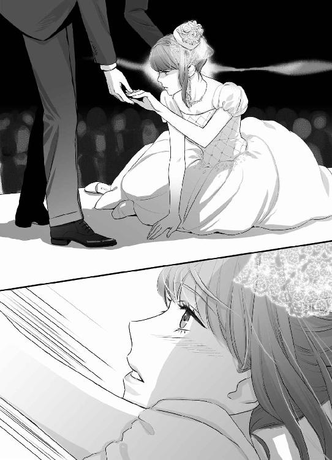
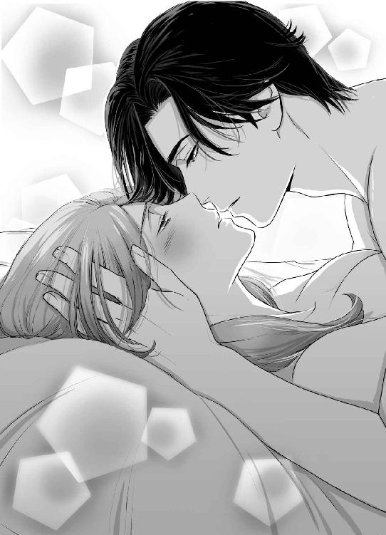
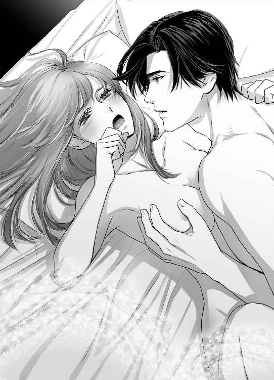
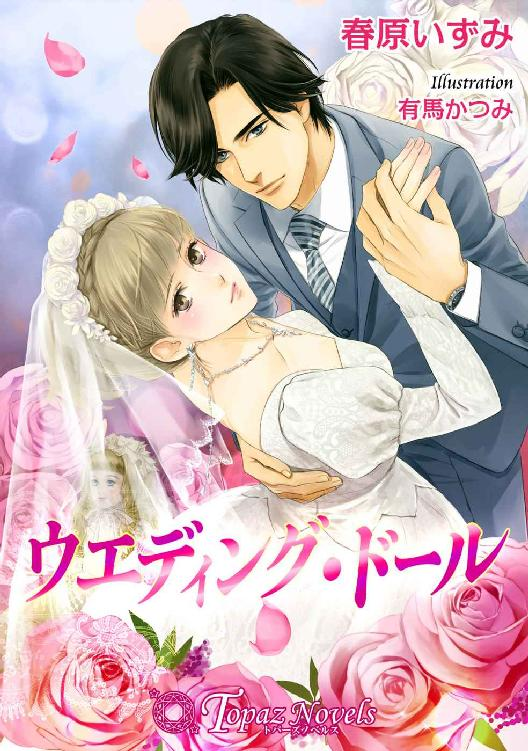
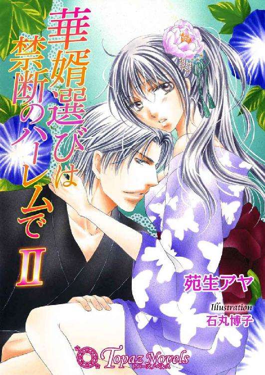
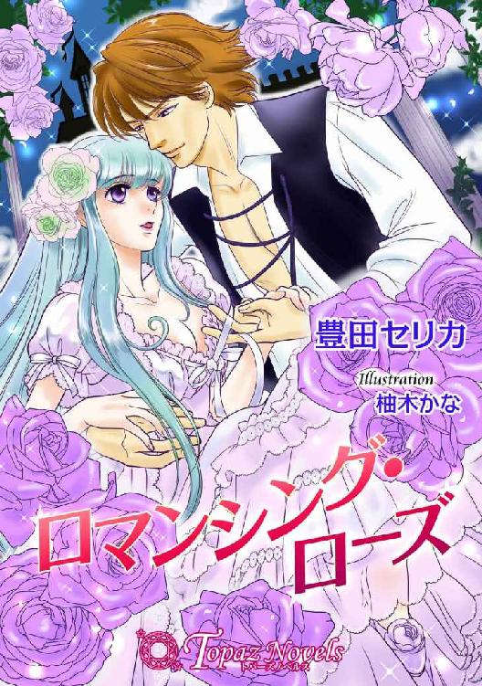

| ウェディング・ドール【特別版イラスト入り】 (トパーズノベルス) | |
| 春原いずみ | |
トパーズノベルス
ウエディング・ドール
著作 春原いずみ
Illustration 有馬かつみ
この物語はフィクションであり、実在の人物・団体・事件とは一切関係ありません。
ウエディング・ドール
ドレスは、薔薇色のシルクの上に純白のオーガンジーを重ねていた。プリンセスラインの美しいドレスは、ふわふわと膝から下に絡みつく。履き慣れないハイヒールの足下が少し心許ない。でも。
〝ちゃんと踊らなきゃ......〟
ワルツは優雅に、美しく。緩やかな弧を描いて。彼の腕に抱かれて、エレガントに踊る。ダンスは好きになったし、きっとうまくもなったけど、まだたまに足下が揺らぐことがある。
「落ち着いて」
よく響く甘い声。耳に馴染む優しい声。
「もっとちゃんと......体重を僕に預けて」
きっと高価なトワレ。爽やかでいい香りがする。しなやかなジャケットの胸に頬を寄せると、ふわりと包み込むように抱き寄せられた。
「あの......っ」
「ちゃんと踊って」
耳元に囁く声。吐息が耳たぶに触れて、少しくすぐったい。
「きゃ......っ」
彼がふわりと身体を開き、ターンをかけた。みんなが見ている真ん中で。泳ぎかけた身体を再び抱き寄せて、支えてくれる。
「あ、あの......」
踊らなきゃ。ちゃんと踊らなきゃならないのに。肩から背中に回った彼の腕が、私を正面に向き直らせる。
「こっちを向いて」
彼の長い指が頬を包む。滑る指先が華奢な顎を持ち上げる。彼の瞳ははしばみ色だ。全体的に色素が薄くて、まるでハーフのような顔立ちの彼に、その瞳の色はよく似合っていた。
「できたら、目を閉じてほしいな」
吐息が唇に触れる瞬間に、彼が言った。
「君の瞳は真っ直ぐすぎて、僕には眩しいよ」
「......っ」
しっとりと柔らかい唇が触れてくる。こぼす声を奪われて、くらりとめまいがする。
これがキスなのだと理解する前に、彼の冷たい舌が唇を撫で、そっと開かせてきた。
〝うそ......〟
キスは甘いって、誰が言ったんだろう。キスは甘くなんかない。キスは......ただ熱い。頭の芯がくらくらとして、今にも倒れてしまいそうなほど、キスはただ熱い。優しい腕と胸の温かさとは裏腹に、私を食い破ろうとする彼の唇は怖いくらいに熱い。
〝だめ......っ！〟
無意識のうちに、私は両腕で彼を突き放していた。
「おや......」
彼が少し驚いたように、ひらりと身を引く。私は両手で、自分の唇を押さえた。
「どうしたの」
「......っ」
私は声にならない悲鳴を上げて、その場を駆けだしていた。
履き慣れないハイヒールの片方を残して。
ＡＣＴ １
はらはらと頬に触れるものがあった。
「雨......？」
三嶋佳奈は顔を上げ、右手で自分の頬を撫でた。
「ああ......」
頬に触れたのは、風に運ばれてきた桜の花びらだった。すでに桜は散ってしまったと思っていたのに、どこかの日陰にでも、遅い花が咲いていたのだろう。
「まるで......私みたい」
みんなに乗り遅れて、ひとり寂しくはらはらと花びらを散らしている。
もう四月だ。佳奈は二十三歳になってしまった。大学を卒業して、行き場所がなくなった。同級生はみんな就職を決めて、新しい場所へとステップアップしているのに、佳奈はひとり取り残されて、実家にも帰りづらくて、こうしてとぼとぼと街を歩いている。
就職に失敗したのは、佳奈の極端な人見知りのせいだ。目の前に人がひとりいれば、もう顔を上げられない。自分でもどうしてなのか、よくわからないのだが、とにかく人の視線が苦手だった。怖いと言ってもいい。人の話を聞いていて、ふとその人の視線が自分の方に来るともうだめだった。顔を伏せて、その場を逃げ出してしまうのが常だ。そんな佳奈だ。結局、筆記試験で通っても、面接ですべて不合格となり、就職はできなかった。
「それ、何とかした方がいいと思うよ」
ひとり暮らしのワンルームマンション。隣に住んでいる従姉妹の絵美に言われた言葉だ。
「就職どころか、人と付き合うこともできないじゃん」
絵美は佳奈の父方の従姉妹で、同い年だ。生まれた時からほとんど一緒に育ったようなもので、佳奈にとっては家族も同然で、顔を上げて話すことのできる実に貴重な存在だった。
「そうなんだけど......」
佳奈の前髪は長い。前髪を完全に下ろしてしまうと、目の下の辺りまでくるほどだ。その状態でうつむくと、佳奈の顔はほとんど他人から見えなくなる。それでやっとほっとして、街を歩くことが出来るようになった。
街はすっかり春だ。桜はすでにほとんど終わり、緑の葉が繁り始めている。ショーウィンドウの中はカラフルで、初夏の彩りを見せ始めていた。佳奈の気持ちとは裏腹に、そこは明るい光に満ちていた。
「きれい......」
佳奈はあるウィンドウ前で立ち止まった。そこには、色とりどりのドレスが飾られていた。ピンクのふわふわとしたスカートが可愛らしいミニドレス。明るいオレンジがぱっと花開いたガーベラのように美しいドレス。ミッドナイトブルーにスパンコールが輝くドレス。そして、そのドレスたちに囲まれるようにして、純白のロングドレスが飾られていた。後ろに引けば長いであろうトレインをぐるりと裾まわりに巻きつけ、美しいドレープを描かせたドレスは、ウェディングドレスだった。おそろいのベールと白い花を束ねたブーケも飾られていて、ちょうど花嫁を囲むゲストたちといった風景がウィンドウの中にあった。
「そうか......ジューンブライドね」
今は四月だ。もう少しすると、花嫁の季節がやってくる。
「花嫁......か」
無意識のうちにウィンドウを見上げて、佳奈はつぶやいていた。顔を上げると、さらりと前髪が額から滑り落ちた。白い額と黒縁の眼鏡をかけた目が現れる。
このひどい人見知りを克服しない限り、花嫁にはなれそうもない。花嫁どころか、同性の友達と付き合うことすらできないのだ。家族以外で話せるのは、従姉妹の絵美だけ。その絵美もこの春に就職が決まり、勤め始めてしまったので、今までのようにべったりとくっついているわけにもいかない。
今日は家族に勧められて、ハローワークの新卒者対象説明会に行ってきたところだ。しかし、そこでも指摘されたのは、顔をきちんと上げて話ができないことだった。
「面接での印象が悪くなりますよ」
そんなこと言われても、できることとできないことがある。佳奈にとっては、顔を上げて人と話すことは、何よりも難しいのだ。
「そんなこと......わかってるけど......」
いつの間にか、ショーウィンドゥの中の美しいドレスに視線が奪われていく。
「これ、作れるかしら......」
佳奈の唯一と言っていい趣味が、人形のドレスを作ることだ。人形と言っても、子供が遊ぶようなものではなく、フランス製のアンティークドールである。遊びの輪に入っていけない佳奈を心配した祖母からもらったもので、佳奈の宝物だ。
「作るよりも着たら？」
ふいに耳元で声がした。
「......っ」
腕を掴む手。ぐっとかなり強く掴まれている。この力は男性のものだ。
「な、何......っ」
「ドレスは作るより、着た方がいい。女性なら、そう思わないか？」
低くて、耳に残る声。滑舌がよく、ほとんど囁き声なのに、その言葉は佳奈の耳に届く。
「そ、そんなこと......」
「やっと......見つけた」
ぐっと謎の男の指に力がこもった。
〝え......これって......っ〟
白昼堂々、若い女性である佳奈の腕を掴んで離さない男。佳奈は恐怖のあまり、ふりほどくこともできない。
〝誰......誰なの......〟
振り向くことはできない。それどころか、顔を上げることもできない。言葉を発することもできない。
「君、時間ある？ あるよね」
傷つく言葉。時間......時間なんて、切り売りしたくなるくらいある。
「じゃあ、こっちに来て」
「あ......っ」
ぐいぐいと佳奈の腕を強引に引く男は、そっと見上げなければならないくらい長身だった。
〝スーツ......〟
アンティークドールのドレスを縫うだけあって、佳奈には基本的な被服の知識がある。
〝サイズがぴったり合ってる......しわひとつない......〟
視線を合わせることは怖くて、顔を見ることはできない。しかし、声の張りから言って、そう年配ではないだろう。佳奈を引っ張るようにして歩いて行く強引な動きも、無理をしている感じはなく、やすやすと佳奈を拉致しかけている。
「あ......あの......っ」
「やっと見つけた」
彼の声が聞こえた。
「やっと、君を見つけた」
「ウェディング・プランナー......？」
ガラス張りのカフェ。おしゃれすぎて、入ったこともないところに座らされて、佳奈はようやく向かいに座った相手を盗み見ることができた。
年の頃は三十代に入るか入らないか。仕立てのよいスーツをすっきりと着こなしている。顔立ちは涼しげに整っていた。特に切れ長の目の力が強い。一言で言えば『できる男』といった雰囲気だ。
「あの......どうして......私に......」
差し出された名刺を受け取って、佳奈は戸惑いがちに言った。
「私、まだ結婚なんて......」
「君に客になれと言った覚えはない」
彼がすぱりと切り込むように言った。やはり滑舌がいい。はきはきとした、聞き取りやすい話し方だ。
ウェディング・プランナー神野眞守。それが名刺に記された彼の名前だった。
「君、学生？」
「いえ......」
「ＯＬ？」
「違います......」
「はっきり言ってくれないか？ 君は何をしている人なのか」
どうして、自分が詰問されているのかわからなかったが、佳奈は泣きそうになりながら、蚊の鳴くような声で言った。
「......無職です。就職できなかったんです......」
「それは好都合だ。君は今、仕事を探しているんだね？」
好都合はひどいと思ったが、確かに自分は仕事を探している。自分にもできる仕事を。
「はい......」
仕方なく頷いた。神野が我が意を得たりとばかりに、にこりと笑ったのがわかった。微笑むときつめの目元が少し優しくなる。
「僕の仕事を最初に説明しておこう」
神野が言った。
「僕は結婚式をプロデュースする仕事をしている。オフィスとしては結婚に関するすべてをフォローするが、僕が関わるのは基本的に結婚式だ」
「結婚式のプロデュース......？」
「結婚式と披露宴をどんな形で行うか。着るものから花、音楽、料理......すべてをコーディネイトするのが、僕の仕事だ」
「はぁ......」
そう言われても、結婚どころか恋人も出来たことのない佳奈には、ぴんとこない。
「クライアントが望むなら、どんな形の結婚式でも実現させる。変わったところでは......そうだな、イギリスの古城での結婚披露宴というのをやったな。金に糸目をつけないという条件付きだったが」
「あの......」
さすがに好奇心を刺激されて、佳奈は言った。
「それ......いくらくらいかかったんですか......？」
「さて......億の単位であることは間違いないね。何せ、式場以外のものはすべて持ち込みだ。億も十単位だよ」
「十億円以上......」
めまいがした。
「それでも、決して高い方じゃない。ドレスだけで億単位なんていう結婚式も珍しくはないから」
そして、彼はぐっと身を乗り出すようにして言った。
「そのドレス、着てみたいと思わないか？」
「はい......？」
何を言われているかわからなくて、一瞬戸惑ってしまった。
「ドレス......？」
「億単位の式ともなると、模擬挙式......リハーサルを必ずする。失敗したじゃ、話にならないからね。ライティングや映え方も見たいから、ドレスも当然本物を使う。といっても、花嫁が着るものを使うわけにいかないから、二着作ることになる。リハーサル用のものはこちらで買い取って、場合によってはデザインを変更して、レンタルに出す」
「はぁ......」
千万や億単位のドレスなんて、いったい何を使って、どう作っているのか、まったくぴんとこない。佳奈が着ている服なんて、量販店の何千円単位のものだ。人形用にはそれなりに高い端切れも買うが、自分用には最低限しかお金を使ったことがない。自分には、そんな価値なんかないと思っているから。
「君、そのドレスを着てみたいと思わないか？」
再び、彼が言った。しかし、その言葉が佳奈に届くまでは少し時間がかかった。何を言われているのか、すぐには理解できなかったからだ。あまりに唐突すぎて。
「え......？」
「だから」
噛んで含めるように、彼が言った。
「君に、ウェディングドレスを着るモデルをやってほしいんだ」
佳奈の運命を変えてしまう言葉を彼はこともなげに言った。佳奈の前で冷たく閉ざされていた扉がその時大きく開いたのだった。
人形は身の丈が四十センチほど。あまり大きなものではない。しかし、隅々まで手の込んだ作りは繊細なものだ。陶器製の白い肌に、青い大きな瞳。ドレスは佳奈が作ったお手製だ。ベルギー製のアンティークレースはびっくりするほど高かったが、子供の頃から貯めていた貯金を下ろして買ってしまった。すこしくすんだローズ色がお気に入りだ。
「佳奈、いる？」
ドアがノックされた。チェーンをかけたまま、そっと開けると従姉妹の絵美が呆れたような顔をして立っていた。
「あんたねぇ......」
ドアを開けると、コーヒーをいれたマグを二つ持って入ってきた。
「私の声、まだ覚えないの？」
「そんなこと......ないけど」
俯いたままドアの鍵をかけ、佳奈は部屋に戻った。といっても、ロフトつきのワンルームだ。何歩か歩けば、部屋の真ん中である。
「だったら、いちいちチェーンかけたまま確認しないでよ」
「だって......」
絵美はいい子だけど、たまに無神経なところがある。佳奈が他人が苦手なことを誰よりもよく知っているはずなのに、友達を連れてきて、一緒に遊ぼうなどと言ってくることがあるのだ。何度か、割り勘の頭割りのために引っ張り出されて、すっかり用心深くなっている佳奈である。
「ねぇ、絵美......」
「なぁに？ 仕事でも見つかった？」
ぐさりとくる一言。佳奈は曖昧に頷いて、バッグの中からカードケースを取りだした。
「絵美、この人、知ってる？」
「えー？」
佳奈が差し出した名刺を受け取って、絵美はごくりとコーヒーを飲んだ。
「ウェディング・プランナー......神野眞守......聞いたことあるような......」
そして、すぐにスマホを取り出すと検索を始めた。佳奈はぼんやりと人形を眺めながら、まだ熱いコーヒーを一口飲んだ。
「あ、わかったぁっ！」
絵美がぱっとスマホを差し出してきた。
「なーんか聞いたことあると思ったら、女優の三上麻那の結婚式プロデュースした人じゃん。海辺のホテル借り切って......」
めんどくさいとばかりにスマホを放り出すと、絵美は積み上げてある雑誌をあさり始めた。
「絵美、散らかさないでよ......」
意外だが、佳奈の部屋にはファッション雑誌がたくさんある。人形のドレスを作るために、いろいろと雑誌のグラビアを眺めるのが好きなのだ。特に海外のファッション誌が好きだ。
「あった。見た覚えあったんだ」
雑誌のページを開き、差し出してくる。
「これよ」
『潮風に吹かれて......メモリーウェディング』のタイトルで、雑誌のグラビアを飾っている美しい女優の花嫁姿。ふわふわとしたシフォンを重ねた、夢のようなドレス。きらきらと輝くビーズをたっぷりとあしらい、長く引いたベールには星のようなグラスビーズが縫い付けられている。
「これ......って......？」
「この結婚式、ドレスとか全部をコーディネイトしたのが、この人」
とんとんと名刺の縁を叩く。
「これでもかっていうほどロマンティックな結婚式だったからね。結婚に憧れている乙女なら、誰でもこんなドレス着て、こんな結婚式したいって思うでしょ。だから、結構この時話題になったのよね。このプランナーもイケメンだったし。って、佳奈、どうして、この人の名刺持ってるのよ」
「うん......」
佳奈は俯いたまま、両手でカップを包んだ。
「今日、街で会ったの......」
「会ったって......」
「モデルをやってほしいって言われた......」
「モデル？ 佳奈が？」
佳奈はこくりと頷いた。
「何だかよくわからないんだけど......」
結局、佳奈は神野に返事をしなかった。あまりに突然だったし、神野を信じていいのかどうかもわからなかったからだ。街を歩いていてスカウトされるなんて、おとぎ話でしか聞いたことがない。
「ドレスを着てほしいって......」
「ドレス？」
「神野......さんのプロデュースするお式のドレスは二着作るんだって。それで、一着は花嫁さんが着て、もう一着はモデルが着て、式のリハーサル......みたいなのをするらしいの......」
「マジ？」
疑うように見る絵美に、佳奈はため息をついて、首を振った。
「嘘なんか......つかない」
「それもそっか。そんな気の利いた嘘、佳奈がつけるはずないもんね」
絵美は肩をすくめた。それから、カップをテーブルに置き、ふいに目をきらきらさせる。
「でもさ、それってすごくない？」
「すごいって、何が？」
「それが本当なら、佳奈、セレブと同じドレスが着られるんだよ。ウェディングドレスっ！」
雑誌を開き、ぱんと軽く叩く。
「ほら、こういうのっ！」
「うん......」
「佳奈さぁ、スタイルだけはいいんだから、もっと自信持ちなよ」
絵美がずけずけと言う。
「神野眞守本人がスカウトしてきたって、すごくない？ どうせ暇なんだし、絶対やりなよ！」
どうせ暇なんだし。確かにその通りだ。仕送りでひとり暮らしをさせてもらえるのも、あとどれくらいだろう。スカウトしてきた神野は、間違いなく本人らしく、雑誌の隅にある顔写真そのものだった。
「怪しいバイトでもなさそうだし......」
佳奈は消極的につぶやいた。
「やってみようかな......」
そっと手を伸ばして、人形を手に取る。
「こんなドレス......着られることなんて、ないんだし......」
花嫁になることを夢見た時もあったけれど、こんなひどい人見知りでは、結婚なんてあり得ない。佳奈は自分に言い聞かせるように頷いていた。
ＡＣＴ ２
電話で指定されたオフィスは、ガラス張りの高層ビルの中にあった。一応、就職活動用に買ったスーツを着てきたけれど、そんな自分がかわいそうになるほど、ビルを出入りする人たちはスタイリッシュだった。一口にスーツと言っても、ラインがまるで違う。背筋を真っ直ぐに伸ばして、颯爽と歩いて行く姿に、佳奈はますます俯いてしまう。
〝どうしよう......思いっきり場違いじゃない......？〟
そっと見上げたボードには、『ウェディングオフィス 神野』の文字があった。十階のフロアを全部借り切っているらしい。
「ここに......入っていかなきゃならないの......？」
佳奈はエントランスのガラスドアを前に、立ちすくんでいた。傍を通る人たちが不思議そうに見ているのがわかったが、どうしてもそこから入っていくことができない。
「こんなことだろうと思った」
ふいによく響く声がした。腕をぐいと掴まれる。
「あ、あの......っ」
「さっさと来い。僕は忙しいんだ」
突然現れ、佳奈をぐいぐいと引っ張っていたのは、神野だった。
オフィスは白でまとめられた静かな空間だった。恐ろしく広いフロアをパーティションで区切ってあり、神野のいる場所だけがガラスで包まれていた。
「座って」
広いデスクとやはり白でまとめられたソファセット。そこを示されて、佳奈はすとんと腰を下ろした。
「コーヒーと紅茶、どっちがいい」
「あ、あの......紅茶を......」
神野は電話を取り上げると、紅茶とコーヒーを言いつけた。
「それで？ 気持ちは決まったわけだね？」
佳奈は電話で、もう一度会いたいとだけ言った。それしか言えなかったからだ。いくら顔が見えないとはいえ、よく知らない相手と長々と電話で話すことは無理だった。
「あの......私は何をすればいいんでしょうか......」
神野がため息をついたのがわかった。
「......もう一度、そこから話さないとだめなのか？」
「い、いえ......あの......ドレスを着ることはわかっていますけど......」
「君の仕事は、僕のプロデュースを目に見える形にすることだ」
神野が言った。両手を組んで、顎の下につけ、真っ直ぐに佳奈を見つめてくる。涼しげに整った顔立ち。栗色の瞳が佳奈を見つめている。佳奈はますます顔を上げられなくなってしまう。
「具体的には、うちのブランドのドレスを着て、模擬挙式やショーで歩いたり、ポスターやグラビアに出てもらう。少し慣れたら......そうだな、うちのアイコン的な存在として、取材なども受けてもらうことになる」
「ま、待って下さい......っ」
佳奈は慌てて首を振った。
「む、無理です......っ。そんなの......」
「無理でも何でもやってもらう。それが君と契約する上でやってもらう仕事だ」
神野はきっぱりと言った。
「僕が求めるのは、最高のものだ。今まで、いろいろなモデルを使ってきたが、どこかに必ず不満があった。どこかに、これじゃないと思わせるものがあったんだ」
佳奈は絵美に言われて、神野の仕事を見直していた。今まで、さらっと見流していたグラビアや記事をじっくりと読んでみたのだ。
神野は恐ろしく美意識の高い男だった。彼のプロデュースするウェディングは俗っぽさからかけ離れた、そのままで絵になるような美しいものばかりだった。白亜の教会で白い花だけに囲まれるウェディング。ガーデンに色鮮やかな花がかぐわしい香りを放ち、緑に囲まれた人前挙式。ケーキも大きいだけではなく、本当に食べられる美しい宝石のようなケーキだ。花はいつもたっぷりと溢れるほどに生けられ、そして、ドレスは少女が夢見るような美しさ。洗練されたライン、華やかなレースやチュール。ちりばめられたパールやビーズ。ティアラやアクセサリーはもちろん本物のジュエリーを多用している華麗なものだ。
「君は僕が見つけた最高のモデルだ。これは一般的な意味じゃない。モデルとして一流と考えたら、君は三流以下だろう。身長は足りないし、スタイルも完璧ではない。ルックスもだ」
そこまで言わなくてもいいと思う。佳奈はますます身を縮める。
「しかし、君は間違いなく、僕のイメージを具現できる。これでも、見る目には自信がある」
神野という男は、確かに自信の塊のような男だった。彼のインタビュー記事に、それは顕著に表れていた。彼は仮定法をほとんど使わない。「できる」「やる」......彼の言葉には、自分のイメージ、クライアントの求めるイメージを百パーセント具現できるという自信が溢れていた。
「......私は......モデルなんてしたことがありません」
佳奈は少し震える声で言った。
「ルックスを褒められたこともありませんし......」
「別に、君を褒め称えるつもりはない」
気持ちいいくらいぴしゃりと言って、神野は契約書をすっと差し出してきた。
「ここにサインした時から、君は僕のものになる。僕の最高のモデルとして磨き上げられ、僕のイメージを形にするものとして働いてもらう。それが君に与えられた仕事だ」
佳奈が考えてきた仕事というものは、オフィスで事務を執ったり、何かを売ったりすることだけだった。それ以外の仕事なんて、考えたこともなかったのだ。
「私に......できるんでしょうか......」
まともに人と話すこともできないのに、モデルなんてできるんだろうか。佳奈の知っているモデルは、みんな人並み外れて美しく、自信に溢れている。しかし、自分は......。自分の顔を鏡で見ることもほとんどなく、いつも俯いている。背中を真っ直ぐに伸ばすことも苦手だ。少し身長が高めなこともあって、猫背が癖になっている。
「できるかどうかじゃない。やってもらう」
神野が高飛車に言った。これほど自信があったら、世の中生きていて楽しいだろう。佳奈はそっとため息をつく。
ここで首を横に振って逃げ出すのは簡単なことだ。しかし、佳奈にはもう選択の自由は残されていないのだ。両親からの仕送りはいつ途絶えるかわからない。就職がまだ決まっていないことも、実は話していない。絵美から伝わってはいるだろうが、佳奈自身から話したことはなかった。正直、両親と話すことさえ、佳奈には苦痛でしかなかった。
「......」
震える手でペンを取る。契約書に書かれた契約金と支度金、報酬はびっくりするような金額だった。これだけあれば、佳奈が十年は贅沢に遊んで暮らせそうだ。
「足りなければ、いつでも言ってくれていい」
神野が素っ気なく言う。
「君にそれだけの価値があれば、いくらでも投資はする」
シンデレラに差し出されたガラスの靴。佳奈は小さな字で自分の名前を書くことで、その靴を手に入れたのだった。
最初に連れて行かれたのは、オフィスと同じビルに入っているヘアサロンだった。
「いらっしゃい......あら......」
大きな鏡がたくさんあるサロンだ。佳奈は神野に腕を掴まれている。
「あ、あの......っ」
「その口ごもる癖をまずやめてもらいたいな」
ぴしゃりと神野が言った。
「オーナー、水口はいる？」
神野は迎えに出てきた上品な感じの女性オーナーに言った。彼女は神野の勢いに気圧されたように頷いた。
「いるけど。神野ちゃん、どなた？」
「うちのモデル候補。あ、水口」
「はぁい」
水口と呼ばれたのは、若い男性スタイリストだった。シザースバッグを細い腰につけ、帽子をかぶったおしゃれな感じの男性だ。
「神野さん、お久しぶり......って、ずいぶん、やりがいのある子連れてきたねぇ」
「神野ちゃん、神野ちゃんのとこのモデルって、この前、エリカに決まったんじゃなかったの？」
「エリカは一度だけ。クライアントの逆鱗に触れて、アウト」
「あら、まぁ......」
「やっぱり既製品のモデルはだめだ。どうしても着こなしが一辺倒になる。それに、下手をするとクライアントよりうまく着こなそうとしたりするんでな」
神野ははっきりとした口調で言うと、ぽんと佳奈を水口の方に押しやった。
「髪の質は悪くない。任せるから、適当に扱いやすくしてくれ」
「カラーとかパーマは？」
「任せる。学生じゃないから、どっちもＯＫだ。うちの専属になるから、よろしくな」
「え」
オーナーと水口が顔を見合わせた。そして、じっくりと佳奈を見ている。
〝こんなダサい子って、顔に書いてある......〟
逃げ出したくなったが、出口をしっかりと神野がふさいでいる。佳奈のやりそうなことなどお見通しというわけか。
「了解」
水口がにっと笑った。
「神野さんのお姫様、預かったよ」
水口の手が佳奈の髪を軽く梳く。
「へぇ......さすが、神野さんだ。見る目ある......」
男性のスタイリストに髪を触られるのは初めてだ。佳奈はわけもなく緊張していた。
「カラーとかパーマは？」
「あ......りません」
どうにか、口ごもらずに答えられた。雇い主の言うことは聞かなければならない。その点で佳奈は実に真面目だった。
「君、いくつ？ 高校出たくらい？」
「二十三......です」
「へぇ、大学出たあたりかぁ。見えないなぁ」
髪にきちんと櫛を通し、眼鏡を外す。佳奈の眼鏡は半分は伊達だ。軽い近視ではあるが、眼鏡はなくても生活に困らない。顔を隠すために、高校時代からかけ始めた。きっと今なら、マスクを外せない高校生になっていただろう。そういう依存症があると聞いたことがある。
「髪、きれいだよ。手入れはちゃんとしているみたいだね」
手入れといっても、大したことはしていない。もともと髪が丈夫な質なのだ。下ろすと背中の真ん中辺りまである髪だが、枝毛が出来たことはない。
「扱いやすくだから......少し明るくして、軽くパーマかけるけど大丈夫？」
佳奈はこっくりと頷いた。
「......神野さんのおっしゃる通りに......」
「神野さんのおっしゃる通りにか......従順だね」
さくさくと音をさせながら、水口がハサミを使い始めた。びっくりするくらいの毛束が落ちていくが、髪の長さはほとんど変わっていない。きょとんとしている佳奈に、水口が笑った。
「もしかして、あんまり髪とか切らない？」
「先を揃える位なので......従姉妹がやってくれます」
絵美は美容師を目指したことがあるくらいの腕前だ。
「神野さんとはどこで知り合ったの？ 君とは世界が全然違う人だと思うけど」
できたら黙っていたい佳奈だが、水口は美容師だけあって、話し好きらしい。器用に手を動かしながら、軽い口調で話しかけてくる。顔を見合わせず、鏡越しのせいか、佳奈も少しは話しやすい。
「街で......声をかけられました」
「へぇ、ナンパか。神野さんらしくない」
水口の手が佳奈の髪を撫で、髪の分量や見た目を計っている。
「あの人、良くも悪くも保守的だからね。俺たちからすれば、もっとアバンギャルドな方向に行ってもいいのになと思うんだけど、頑固なまでに保守的。あの人のプロデュースする結婚式、知ってる？」
「雑誌で......見ました。とても、きれいだと思います」
「女の子の夢だよね。それを形にするのがあの人。新しい形は提案しない。それがいいのか悪いのか、俺にはわかんないけど、成功しているんだから、いいのかもね」
さすがに流行の最先端を行く美容師だ。女性の夢を叶えるという神野のやり方に、少し不満もあるようだ。
佳奈は神野の作り上げるクラシカルな世界が嫌いではない。むしろ、好きと言ってもいいだろう。佳奈が神野の申し出を受ける気になったのは、絵美の助言のせいばかりではなかった。雑誌で見た、神野の作り上げる夢の世界が好きになったからだ。保守的とかどうとか、そんなことはよくわからないが、ただ美しいと思ったのだ。
「カットはこんなもんでいいかな？ どう？」
長かった前髪が少し切られていた。髪の長さ自体はほとんど変わっていないが、全体の嵩が減った感じだ。重さがなくなり、ちょっと今風の女の子が怯えた顔でそこにいた。
「どうって......よくわかりません......」
「わかりませんか」
水口がくすっと笑う。
「こんな子、神野さん、よく見つけてきたな。あの人や俺みたいな業界には絶対にいないタイプだね」
水口の言うことはよくわからなかったが、何だか少し馬鹿にされた気がした。傷ついた顔をしてしまったのだろう、水口が困ったように眉を寄せていた。
「ごめんね。悪い意味じゃないんだよ。何て言うのかな......ピュアな感じ？ まだ全然色がついていない感じなんだよね。そういうところに、神野さんはきっと価値を見いだしたんだと思うけど」
そして、髪をざっとブロッキングし始める。
「少し明るい色にするよ」
髪の色は少し黄色みのある栗色。ふわっと緩いパーマをかけて、メイクもしてもらって、鏡の中には、見たこともない女の子がいた。
〝誰......これ〟
「また傷ついちゃうかも知れないけど......化けたねぇ」
自分でメイクまでしておきながら、水口がびっくりしたように言った。
「へぇ......顔立ちきれいなんだ......。眼鏡と前髪でよくわからなかったから......」
佳奈はぼんやりと鏡を見つめていた。とても自分の顔とは思えない可愛らしい女性がこっちを見ている。瞳の色がわずかに葡萄がかっているのに、今始めて気づいた。髪の色を明るくし、前髪を短くしたので、瞳の色がはっきりしたのだ。
「さすが、神野さん。お目が高いわ」
「それは光栄だな」
よく響く声がした。佳奈ははっとして、我に返る。鏡の向こうから、神野が近づいてくるところだった。彼は背が高い。水口も長身だが、神野の方がすらりとした長身痩躯だ。それでもしっかりと肩が張っているので、スーツがよく似合う。
「どれ、できたか？」
「ええ。仕上げには自信ありますよ」
水口がくるりと椅子を回す。
「きゃ......っ」
ふわりと髪が頬に触れた。眼鏡も前髪のベールもないことに戸惑って、顔を上げられない。
「佳奈」
彼が佳奈の名前を始めて呼んだ。よく響く声で呼ばれる名前は、まるでずっとそう呼ばれていたかのように、彼の声に馴染んでいた。彼はずっとそう呼んできたかのように、ごく自然に佳奈を呼んだ。
「はい」
あまりにそれが自然だったので、佳奈も素直に返事をする。
「まず、その俯く癖をどうにかしなさい」
「はい......」
「水口は、君が顔を上げられる程度にはしてくれたはずだ。鏡を見て、そうは思わないか？」
そっと顔を上げる。鏡の中の女の子も顔を上げる。それは初めて見る顔だった。整った美人ではないが、可愛らしい顔立ちだった。
「それが君の顔だ」
すっと神野が後ろに立った。
「誰もが振り返るような美人ではないかも知れないが、印象に残るコケティッシュな顔立ちだ。どんな服でも着こなせる、どんな色にも染まることのできるピュアな顔立ちと言っていい」
神野の言葉はまるで魔法だ。その言葉の一つ一つを聞きながら、佳奈は鏡の中の自分を見つめる。
「これが君の顔だ。よく覚えておきなさい」
「はい......」
佳奈は小さく頷いていた。
オフィスはビルのワンフロアだ。半分が事務を仕切る部門で、もう半分が壁で仕切られていて、そこはレッスンやリハーサルを行う広いフロアになっていた。
「初めまして」
足のラインの見える短めのスカートにＴシャツというシンプルなものに着替えさせられて、佳奈はそのフロアに連れてこられた。
「初めまして......三嶋佳奈です」
そこに待っていたのは、すらりと姿勢のいい女性だった。
「ウォーキングインストラクターの髙橋紀子です。歩き方のレッスンをさせていただきますね」
そして、差し出されたのはかなり踵の高い靴だった。佳奈が履いたこともないようなレベルだ。おそらく十センチ近くある。
「こんな踵の高い靴......」
「ダンスシューズですから、見た目よりも履きやすいはずです。とりあえず、履いてみて」
髙橋は靴を佳奈の足下に置いた。少しためらってから、そっと足を入れる。
〝何だか、シンデレラの靴みたい......〟
「形のいい足ね」
髙橋がにっこりと微笑んだ。
「きれいなギリシャ型のつま先。ポインテッドトゥの靴を履くために生まれてきたような足ね。甲も高くないし、幅も少し細めくらい。あなた、靴を買うのに困ったことないでしょう？」
靴を買うのに困ったことと言ったら、店頭で買えないことくらいだ。店員と話をすることができないため、いつも通販ですませていた。確かに、サイズだけ指定すれば、履けない靴が届いたことはなかった。
「はい、真っ直ぐに立って」
初めて履いたハイヒールのおかげで、視界は高くなったが、足下がぐらつく。真っ直ぐに立つことがこんなに難しいとは。
「体重を均等にかけて。前のめりにならないように。背中は真っ直ぐに伸ばすのよ。頭のてっぺんに糸がある感じね」
とんと背中を軽く押され、顎をくいっと持ち上げられる。
「わ......」
「下を向いちゃだめ。視線は真っ直ぐ上げて。足下は見ないこと」
「で、でも......っ」
「背中が丸くなってはだめ。視線をしっかり上げて、前を見て歩きなさい」
一昔前なら、頭の上に本を載せて歩くようなことだろう。佳奈はそっと一歩を踏み出した。
「わ......っ」
すぐに転びそうになってしまう。
「こける前に、次の足を出すのよ」
髙橋の声がした。少しよろめいた身体は、次の一歩でどうにか支えられた。そのまま、一歩一歩とゆっくり歩いて行く。
「下を向かないで」
この言葉はなんて難しいんだろうと佳奈は思う。ずっと俯いて二十三年間生きてきたのだから、一朝一夕に直せるはずもない。でも、顔を上げてそっと見る世界は、なんて明るいんだろう。怖いものばかりがあると思っていたのに、そこにあるのは光だった。明るく暖かい光がいっぱいに満ちていた。一歩一歩は少し足が痛いけれども、止まろうとは思わなかった。
「ＯＫ。最初にしてはいいわ」
ターンの仕方を教えて、ぐらりとした佳奈を軽く支えながら、髙橋が言った。
「神野さん、筋は悪くないわ。足の形もいいし、膝が真っ直ぐなのも気に入った。椅子の生活？」
最後の一言は佳奈に向けられたものだ。佳奈は慌てて頷いた。
「フローリングなので。下に座ると冷たいんです」
冷たく感じるのは、世間だけで十分だ。これだけはと贅沢して買ったソファにもたれて、人形を眺めているのが、佳奈は好きだった。
「いいわ。三ヵ月もがんばれば、ちゃんとしたウォーキングができるようになるわ」
「一ヵ月だ」
フロアの片隅で静かに眺めていた神野が言った。
「髙橋、一ヵ月で仕上げてくれ」
「え」
佳奈は思わず声を上げていた。
「一ヵ月って......」
「神野さん、いくら神野さんの頼みでもそれは無理よ。ウォーキングを根本的に変えるには、それこそ骨格から変えるようなレッスンが必要よ。いくら、彼女が資質に恵まれていたとしても、三ヵ月でぎりぎり」
「できないことは言っていない」
神野は高飛車に言い捨てる。
「一ヵ月だ、髙橋。一ヵ月で、彼女をステージに上げる」
佳奈は黙ったまま、その場に立ち尽くしていた。一ヵ月で、彼はいったい何をしようとしているのだろう。
「複雑な動きをさせようとしているわけではない。ただ真っ直ぐに、ドレスで歩けるようになればいい」
「それがいちばん難しいのよ」
髙橋がため息交じりに言った。
「ドレスのトレインを引いて、真っ直ぐに歩くのは、プロのモデルでも難しい。特にパンツをはき慣れている子はね。佳奈さん、あなたの普段着パンツが多いでしょ」
「はい」
スカートは就活以外では穿いたことがない。
「足のラインを意識することに慣れていない子に、それを意識させるのは至難の業なのよ」
「君ならできるさ」
神野が笑った。
「どんなモデルでも、きっちり仕上げてきた君なら」
「飴と鞭ね」
髙橋が肩をすくめた。
「あなたは私を使うのがうまいわ、神野さん」
「お褒めにあずかって光栄だ」
神野はにっと笑う。
「佳奈、レッスンが終わったら、オフィスに来なさい。髙橋、レッスンの時間は君のものを最優先する。この子をしっかり仕上げてくれ」
高橋がうなずいた。
「了解しましたわ、ボス」
佳奈がウォーキングのレッスンを終えて、神野のオフィスに来たのは、それから一時間後だった。うちでもレッスンするようにとダンスシューズを持たされて、まさに足が棒の状態である。
「来たか」
とりあえずノックして、どうにかオフィスに入ってきた佳奈に、デスクから立ち上がった神野が言った。
「座りなさい」
ソファを指さされ、無意識に座った佳奈に、神野の檄が飛んだ。
「ソファにはもっと浅く座るんだ。膝を揃えて、足は斜めに流す。その方が膝下が長く見える」
「はい......」
社会人としての立ち居振る舞いとモデルとしての立ち居振る舞いは微妙に違う。前者は己を社会に適応するものとして見せるためにあり、後者は己を美しく見せるためのものだ。
「契約書にサインした時から、君はウェディングオフィス神野専属のモデルだ。常にうしろにこのオフィスを背負っていることを意識しなさい」
「はい......」
神野がデスクにさっと紙を広げた。プリンターで打ち出した予定表のようなものだ。
「さっきも言ったが」
神野の話に無駄な前振りはない。いきなり核心に入ってくる。それだけ、彼は忙しい人間なのだろう。
「君のデビューは一ヵ月後。初夏のブライダルショーを考えている。そこでアイコンとしてのデビューをしてもらう」
「アイコン？」
「さっきも言っただろう。君は唯一の専属モデルだ。今後、ブランドのアイコンとして、働いてもらう」
「唯一......って......。そんなこと聞いていません......っ」
「おや、知らなかったか」
神野は軽く眉を上げただけだった。
「うちはもともと既製のモデルや、うちでブライダルをプロデュースしたクライアントを使って、ブライダルの提案をしてきたんだ。しかし、それではなかなか僕の持つイメージを完全に表すことが難しくなってきた。だから、既製ではないモデルを使うことにしたんだ」
「それが......」
「そう、君だ」
神野はさらりと言う。
「逆に言えば、君を見つけなければ、アイコン的なモデルを使うことは考えなかっただろう。実際、それで仕事的には成功しているからね。しかし、僕は君を見つけてしまった。君なら、僕が持っているイメージを完璧に具現できる」
佳奈は少し怖くなってきていた。
この人は、佳奈の何を知っているというのだろう。一応、履歴書は持ってきたが、彼はそれを見る前に、佳奈に声をかけてきた。佳奈の外見以外知らない状態で、佳奈を自分のブランドのモデルにと誘ってきたのだ。
「あの......神野さん」
佳奈は思い切って言った。
「私は......神野さんが思ってくれているほどのものではないと......思います。人と会うことや話すことが苦手で、大学も......やっと卒業しました。話せる相手は......隣に住んでいる従姉妹くらいです......」
「佳奈、顔を上げて話しなさい」
神野が言った。
「顔を上げなかったら、何を言っているのかわからない。しっかり顔を上げて、話しなさい」
「はい......」
すっと顔を上げると、神野が少し息を飲むのがわかった。栗色の瞳が佳奈を見つめている。佳奈は慌てて顔を伏せた。男性に見つめられたことなどなかったからだ。自分にどこかおかしいところがあるのか、きょろきょろしたくなるのをようやくこらえる。もう一度顔を上げ、真っ直ぐに神野を見てしまわないように、きれいに結ばれたタイの結び目辺りを見た。
「私に......神野さんが思ってくれたような価値があるんでしょうか......。私には......何もありません。就職も満足にできなかったんです。私にそんな価値があるとは......思えません」
「価値があるかどうかは、君が決めることじゃない」
神野が言う。
「それは君に価値を見いだした僕が決めることだ。僕は君に価値があると思った。だから、投資する気にもなった。契約に同意した以上、君はその僕の言う通りにしていればいい」
すっと神野が立ち上がった。テーブルを回って、佳奈に近づき、手をさしのべる。手入れの行き届いたすんなりと指の長い、器用そうな手だ。
「わかったね？ 佳奈」
「はい......」
神野の手に軽く触れて、佳奈は立ち上がった。彼が佳奈の手を柔らかく包むように握った。ひんやりと冷たい手。
「それでいい」
すっと手を離し、神野は佳奈の肩を軽く押す。
「さぁ、行きなさい。君は僕の大切なモデルだ」
ＡＣＴ ３
契約書にサインした日から、佳奈の人生は百八十度変わってしまった。
「磨けば光るってこと？」
新入社員として働き、くたくたになって帰ってくる絵美が、佳奈の部屋で紅茶を飲みながら言った。
「佳奈、お肌とかすべすべじゃん。もともと色白で赤ちゃんみたいな肌だったけどさ」
「よくわかんない......」
佳奈は毎日、神野のオフィスに行く。そこで神野自ら作ったスケジュールを渡され、一日レッスンや身体の手入れに時間を使う。
「私は、ただ神野さんの言う通りにするだけだもの。商品みたいなもの」
「いいじゃん。お金をもらってきれいになる。私からすれば、羨ましいの一言に尽きるよ」
希望通り、広告代理店に勤めた絵美だが、現実は厳しいらしく、毎日ぐったり疲れて帰ってくる。夕食を作る元気もないというので、佳奈が毎日ご飯を作って待っている。ちなみに、料理もしっかり神野の作ったプログラムに入っていた。「モデルになるのに、どうして料理が必要なんですか？」と尋ねた佳奈に、神野は「男が花嫁に望むものは美しさだけじゃないってことだ」と言った。
「紅茶、おいしいね」
「神野さんのオフィスでいただいたの。おいしいから何ですかって聞いたら、秘書の名嘉真さんが下さったの」
「へぇ......」
神野の秘書である名嘉真は、ほっそりとした小柄な男性だ。てっきり秘書は女性だと思っていた佳奈は、初めてオフィスを訪ねた時、紅茶を運んできた名嘉真に驚いたが、彼が秘書になったいきさつを聞いて、納得したものだった。
「紅茶ですか？」
今日のプログラムを終え、神野のオフィスから出てきた佳奈は、ちょうど居合わせた名嘉真に尋ねた。
「フォートナムメイソンのロイヤルブレンドです。少し差し上げましょうか？」
長身の神野に比べて、華奢で小柄な名嘉真は、佳奈にとって少しは話しやすい相手だった。
「いいんですか？」
「たくさんありますから」
可愛らしいキッチンに入っていく名嘉真に、佳奈はついていった。
「はい、どうぞ」
ティーバッグの方がいいですねと言って、十個ばかり小さな手提げに入れてくれて、名嘉真は佳奈に渡した。
「神野お気に入りのブランドなんですよ。コーヒーは何でもいい方ですが、紅茶にはこだわりがあって」
そういえば、神野のデスクには、いつもコーヒーのタンブラーが二本乗っている。出勤してくる時に、ビルの一階に入っているコーヒーショップから買ってくるらしい。
「そういえば、佳奈さん」
名嘉真がくすっと笑って言った。社内で、佳奈は名前で呼ばれている。佳奈のモデルとしての登録が名前だけだからだ。芸名のようなものである。
「最初に佳奈さんとお目にかかった時、私を見て、とても驚かれてましたね」
「え？ あ、はい......」
佳奈は正直に頷いた。
「普通......お茶を運んでくる方って、女性だと思っていたので」
「でしょうね」
名嘉真はおかしそうに笑っている。
「女性社員も多いですから、お茶くらい彼女たちに運んでもらってもいいんですが、神野のいちばん近くにいるのが私なので、自然と私が運ぶようになりました。まぁ......神野が女性社員に直接何かを頼むと面倒なことになりがちなので」
「どういうことですか？」
「神野はああいう人です。自分の才能だけで会社を興して一流にし、このオフィスを構え、第一線にいる人です。その上、あの容姿です。女性がほっとくわけがない」
「え？」
あまり男性の容姿に興味なく......というより、まともに男性など見たこともない佳奈にはぴんとこない感覚だったが、確かに神野の容姿は優れている。背は高いし、スーツをきっちりと着こなすプロポーションに整った目鼻立ち。華やかな雰囲気の持ち主だ。
「女性秘書を使っていた時期もあるのですが、そうなるとプライベートな用を頼みにくくなるということで、すぐに私に変わりました。私は神野の大学の後輩で、つきあいだけは長かったですから」
名嘉真はおっとりと笑った。
「まだわからないかも知れませんが、もう少しすると......そうですね、あなたが正式にデビューなさったら、私が秘書になった理由がよく理解できると思いますよ」
少し謎めいた言い方をして、神野の秘書は佳奈を送り出したのだった。
「ふぅん......神野さんの秘書って男の人なんだ」
「うん。優しい感じの人」
佳奈はカップを抱えて、ぼんやりと人形を見る。
佳奈が大切にしている人形の名はマリーという。祖母から譲り受けて、佳奈がつけた名前だ。
「ねぇ、絵美。神野さんの秘書が男の人って、どういうことだと思う？」
佳奈の問いに、絵美は苦笑している。
「そりゃ、秘書ともなれば、神野さんの部屋に自由に出入りできるんでしょ？」
「まぁ......そうかな。分単位のスケジュールの管理もしているみたいだし」
「あのかっこいい人のそばにずっといられるんだよ。うまくしたら、自宅の鍵とかも預かれるかも知れない。もっとうまくいったら、つきあえるかも知れない」
佳奈は緩く首を振った。
「神野さんはそういうタイプじゃない。すごく......厳しい人だから」
神野が佳奈に課したレッスンは多岐に渡っていた。ヘアメイクにウォーキング、着こなしのレッスン、ダンスや話し方、料理、マナー......こんなことまでと思うこともたくさんあった。
「もうパンクしそう......」
「でもさ」
絵美が紅茶を飲み干し、カップをテーブルに置きながら言った。
「まだたった二週間だけど、佳奈、すごくきれいになったよ」
「え......？」
絵美はいつものふざけた表情ではなく、真面目な顔をしていた。
「肌だけじゃない。メイクも上手になったし、話し方も変わった。佳奈、私の顔ちゃんと見て話してるよ」
「絵美......」
「私、今まで佳奈とちゃんと会話できると思ってなかったもん。佳奈はいっつも曖昧に語尾を濁しちゃうから、こっちが察するか、適当に解釈するしかなかったけど、この頃はちゃんと会話できるもん。これ、すごいことだよ」
絵美と佳奈はほとんど生まれた時からのつきあいだ。実家も同じ敷地内にあり、東京に出る時も、半ば強引に佳奈も一緒だからと、絵美が親を説得したといういきさつがあった。大学こそ違ったが、キャンパスは近く、二人はほぼ同じ青春を歩いてきたのだ。
「何だか、佳奈が遠くに行っちゃうような気がするな」
絵美がきゅっと抱きついてきた。
「そんなこと......あるわけない」
佳奈は少し笑った。
「私は......きっと、神野さんが期待しているようなものじゃないの。もうじき、神野さんもそれがわかると思う」
「佳奈......」
黒い佳奈の瞳がじっとマリーのガラスの瞳を見つめる。
「きっと......わかると思う」
ダンスのステップは難しい。
「佳奈さんは勘がいいですよ」
ダンス教師の新見が微笑む。
「リズム感はきちんとしている。大丈夫、すぐに踊れるようになります」
本当にそうだろうか？ 頭の中では音符がワルツを踊っている。次に足を右にやらなければならないことはわかっているのに、なぜか左に行ってしまう。ふわっとしたスカートに足が絡まって、転びそうになってしまう。脇腹は筋肉痛で痛いし、腕を上げたままなので、腕の筋肉もぱんぱんだ。
「無理にステップを踏もうとしなくてもいいですよ。ダンスは基本的に男性がリードするものです。私のリードに乗って下さい」
そう言われても、男性と半ば抱き合うようにして踊るソシアルダンスのレッスンは、佳奈にとって頭の痛いものだった。
「ダンスのリードは胸で行います。抵抗があるのはわかりますが、もう少しこちらに寄っていただけますか」
新見が言った。抱き寄せても、佳奈が腰を引いてしまうので、リードしにくいらしい。
「じゃあ、ちょっと見本を見てもらえますか？」
新見が諦めたように言い、自分のパートナーを呼んだ。すらりとプロポーションのいい女性ダンサーは、新見の妻だという。
「じゃ、見てて下さい」
優雅なワルツが流れ、二人は滑るように踊り始めた。足下の複雑さを見ているだけで、佳奈はくらくらしてしまう。
「どうして、こんなことができるの......？」
ダンスなんて、高校時代の創作ダンスか、中学時代のフォークダンス以外やったことがない。一応、ダンス教本とＤＶＤはもらったが、いくら見てもステップは覚えられなかった。
「ダンスは流れだ」
ふいによく響く声がした。慌てて振り返る。
「神野さん......」
いつの間に入ってきたのか、佳奈の横に神野が立っていた。長身なのに、彼はびっくりするくらい気配を消すことができる。武道でもやっているんじゃないのと絵美に言われたが、本当にそばに立たれるまでわからなかった。
「ステップを頭で覚えても、身体はついてこない。それだったら、音楽の流れに任せる方がまだ形になる」
そして、佳奈の腕を軽く掴んだ。
「え......え？」
ふわっと佳奈の身体を軽く回して、ホールドの形を取る。慣れた美しい仕草だった。
「新見先生、少しフロアをお借りしますよ」
神野の靴がすっとフロアを滑った。
「え......っ」
ためらいのないきれいなステップ。強引ではない程度に強く佳奈を引き寄せて、神野はワルツのステップを踏み始めた。
「何も考えるな」
慌てる佳奈に、神野が囁いた。
「頭の中を空っぽにして、音楽だけを感じるんだ」
三拍子のワルツはチャイコフスキーの「眠れる森の美女」。佳奈が子供の頃、祖母に連れて行ってもらった初めての全幕バレエだった。四人の王子から薔薇の花を一輪ずつ受け取る美しいローズ・アダージオをうっとりと見て、いつかはこんな風になりたいと願った幼い頃。
彼が右に行けば右に、彼が左に回れば左に。風に舞うレースのカーテンのように、佳奈はふわりふわりと揺れる。ポニーテールに結んだ長い髪が背中で揺れて、神野の腕に軽く跳ねている。
彼からは微かなラベンダーの香りがした。眠りを誘うほどリラックスできる、気持ちのいい香りだった。
いつの間にか、佳奈の身体は羽のように軽くなっていた。あれほど難しかったはずのステップが自然に踏めて、くるくるとフロアを舞う。
「はい、ＯＫ」
ふいに音楽が止まった。神野が腕を解き、反動で佳奈の身体がふわっと開いた。そのままスカートの裾を軽くつまんで、お辞儀をする。
「可愛い」
新見の妻がにっこり微笑んでいる。
「神野さんのダンス、久しぶりに見たけど、やっぱりうまいわね。ワルツだったら、うちの旦那よりうまいかも」
「とんでもない」
佳奈の手をそっと離して、神野が苦笑している。
「僕のダンスは学生のレベルです。新見先生の足下にも及ばない。第一、先生を信じていなかったら、佳奈は預けませんよ」
「神野さん......ダンスをなさっていたんですか？」
軽く息を切らして、佳奈は言った。プロのダンスはスポーツだと言うが、素人レベルでも運動量は相当だ。運動らしい運動など、高校の体育以来やったことのない佳奈はフルで一曲踊っただけで、息が切れた。
「彼は学生チャンピオンだよ」
新見が笑いながら言う。
「プロにもなれたはずなのに、あっさりやめてしまった。彼の後塵を拝した私がプロになっているのにね」
「もうやめて下さい」
神野が少しタイを緩めて言った。
「先生のおっしゃる通り、佳奈の筋は悪くない。ただ身体がずいぶん硬いようです。その硬い身体で、パートナーから逃げようとするから身体が反ってしまって、ステップをきちんと踏めなくなる」
「私より、神野さんが教えた方がいいんじゃないの？」
そう言う新見に、神野は軽く手を振った。
「僕が教えられるのは、せいぜいワルツです。佳奈にはもう少し上まで行ってもらいたい」
「え......」
新見の妻から渡されたタオルで汗を拭いていた佳奈は、神野を見た。
「上って......」
「佳奈には完璧なレディになってもらいたい。いや、なってもらわなければならない」
神野は静かなよく通る声で言った。
「僕の顧客はいわゆるセレブと言われる人たちがほとんどだ。何を持って一流と言えるかはわからないが、少なくとも僕は彼らに本物を提供したいと思っている。だから、アイコンであるモデルの佳奈には、完璧なレディになってもらわなければならない」
「完璧な......レディ」
そんなものに、自分がなれるのだろうかと佳奈は思う。
未だに、ウォーキングでは足下が少しぐらつく。高いヒールには慣れてきたが、立っている時には大丈夫でも、歩き出すとどうしてもバランスが崩れる。
ダンスだって、今まともに踊れたのが奇跡のようなもので、いつもは気がつくと右手と右足が一緒に動いていたりする。
テーブルマナーはいちばんましかも知れないが、それでも気を抜くとシルバーの順番を間違えたりしてしまう。
「神野さん、それは......無理です」
「なぜ」
首を振った佳奈に、神野はすぐに問い返してくる。
「どうして、無理だと思う？」
「え......」
答えられない佳奈に、神野は軽く手を差し出した。思わず、佳奈はその手に触れる。さっきは冷たかった手に、少しだけ温かさが感じられた。
「僕は少しも無理だとは思わない」
佳奈の手を取って、神野は言う。
「誰でも、最初からレディじゃない。生まれながらの貴婦人なんてよく言うが、僕はそんなものいないと思っている。最初からワルツのステップを踏めるものはいないし、何も教えられなくても、完璧なマナーで食事をできるものはいない」
ゆっくりと神野は言った。
「佳奈、ひとは完璧なレディとして生まれるんじゃない。完璧なレディになるんだ」
「レディに......なる？」
なれるだろうか。
佳奈は考える。私はレディになれるだろうか？
「まだ、佳奈は始めたばかりだ。やってみもしないで、入り口だけをのぞいて、すべてを知ったつもりか？」
「神野さん......」
「僕はまだ、佳奈の顔を全部見たとは思っていない。佳奈はまだまだ変わっていく。その顔をぜんぶ見たいと思っている。佳奈はそれを僕に見せてくれないのか？」
神野の言葉は魔法だと思った。彼はひとつも難しいことを言っていない。わかりやすい言葉で、佳奈に魔法をかける。
「佳奈は変わっていく。さっきワルツを踊ったように、できないことができるようになっていく。階段をひとつずつ上っていく」
神野の栗色の瞳に、佳奈が映っている。
「僕が見たいのは、完璧なレディになった佳奈だ」
彼の声が低くなる。
「そのために、僕は君をここに連れてきたんだ」
マリーの髪は美しい金色だ。頬は薔薇色。微笑む唇はローズ。
今日のドレスは瞳と同じブルーだ。佳奈が一針一針縫った手作りのもので、白いふわふわとしたレースがたっぷりとついている。
「あなたは......レディなの？」
柔らかい髪を撫で、頬を寄せる。
「ダンスは得意？ ワルツは踊れる？」
靴は黒のレースアップ。どんなステップを踏むのだろう。
「私は苦手。どうしても、うまくステップが踏めないの」
ふと、マリーを抱いていた自分の右手を見る。この手に触れた神野の指の冷たさ、そして、微かな体温を思い出す。
「完璧なレディ......」
彼の言う完璧なレディとは、いったいどんな女性なのだろう。どれほど美しくて、どれほどエレガントで、どれほど......素晴らしい女性なのだろう。
「私はレディになんてなれるのかしら......」
神野の求める完璧なレディの姿は、佳奈の目にはまだ見えていない。しかし、ひとつだけわかっていることがある。それは、彼女にはきっとウェディングドレスが似合うということだ。
「そうだ......」
ドレスを作ってみよう。
「マリーになら、きっと似合う」
レディに似合うウェディングドレス。
佳奈はクローゼットから、段ボール箱を引っ張り出した。そこには、たくさんの端切れが入っていた。佳奈が少しずつ貯めた大事な宝物。アンティークドレスの端切れやベルギーレースなど、高価なものもたくさん入っている。佳奈は箱をひっくり返すと、ウェディングドレスにふさわしい布を探し始めた。
「あなたなら、きっと神野さんが探している完璧なレディになれるわ......」
ＡＣＴ ４
一ヵ月はあっという間だった。
若葉の季節はあっという間に走り過ぎて、はっと気づくと、街は夏の彩りに溢れていた。外を歩くと、微かなレモンの香りのする風が吹いていて、天気のいい日には半袖が街に溢れている。
「ＯＫ、佳奈。ずいぶんきれいに歩けるようになったわね」
ウォーキングインストラクターの髙橋がにっこり笑った。
「ヒールにも慣れたし」
「まだまだです」
佳奈はため息をついた。十センチはあるピンヒールに、足が悲鳴を上げている。
「足、痛い......」
「そう？ そうは見えないけど」
髙橋がタブレットで撮っていた動画を見せてくれる。
「ほら、きちんと真っ直ぐに歩けてる。足下のぐらつきもない。上手なウォーキングよ」
「でも」
佳奈はレッスン用のスカートの裾を軽くつまんだ。ワンピースドレスではなく、ゴムウエストのロングスカートだ。長さを簡単にアレンジできるので、レッスンには便利である。
「裾が長くなるとだめ。踵に引っかかりそう」
「重心が後ろに残っているのね。前に蹴り出すのをもう少し、気持ち早めた方がいいわね」
髙橋がお手本を見せる。腰から前に出すようなモデルウォーキングだ。
「佳奈のウォーキングは上品でとても素敵よ。ゆったりときれいに歩いているわ」
髙橋がにっこりした。
「じゃ、もう一度初めから」
神野のガラス張りのオフィスには、紅茶のいい香りがしていた。今日のお茶の香りはアールグレイだ。
「デビューの時期を決めた」
佳奈がソファに座るなり、神野が言った。
「え？」
佳奈は白いワンピースを着ていた。パールの光沢のある膝丈のワンピース、袖はシフォンのパフスリーブだ。シンプルなシャツワンピースだが、デザインはエレガントだ。
佳奈がここに着てくることを許されている服は、すべて神野の見立てだ。初めは私服で通勤していた佳奈だったが、大学生のカジュアル......ちょっと地味すぎる......にだめ出しした神野が、佳奈の自宅に届けてきたのだ。それ以来、佳奈は届けられる服を着て、出勤している。
「デビューって......」
「来月のジューンブライドパーティのショーで、君をデビューさせる」
「待って下さい......っ」
佳奈は慌てて言った。
「ショーなんて、無理です......っ」
「どうして」
神野は名嘉真が運んできたアイスティーをゆっくりと飲んだ。
「髙橋から報告はもらっている。佳奈のウォーキングは、十分にショーを歩けるレベルに達している。動画も確認させてもらった」
「それは......ただ真っ直ぐに歩くだけだからです。レッスンだから......」
「今日からショー用のレッスンに入ってもらう。歩く距離は変わらないし、ドレスもトレインを引くものにはしない」
神野はデザイン画を取り出した。
「うちのデザインをしてくれているデザイナーの新作だ。来年の春のシーズンに投入する」
シフォンを重ねた花びらのようなドレス。ダイヤモンドカットの襟元、ビーズをたっぷり縫い付けたウェイスト、スカートの長さは床ぎりぎりだ。
「きれい......」
一緒に描かれているヘッドドレスは、シンプルなカクテル帽に短いベールをつけたもので、ドレスと同じビーズがちりばめられている。
「うちのブライダルではドレスの持ち込みもありだが、うちのドレスを使うなら、デザイナーが一からデザインする。そのドレスは佳奈のイメージで作らせた」
「私の......」
佳奈はもう一度デザイン画を見た。
さっとラフなタッチで描かれたデザイン画には、ブーケも描き込まれていた。白いガーベラとグリーンのアイビーで作られた可愛らしいラウンド型のブーケだ。
「どうだい？ 君に似合いそうだろう？」
神野が言った。
「ゴージャスが僕のイメージかも知れないが、本当にやりたいのはこういうタイプのものだ。可憐でエレガントなイメージだ」
ドレスは美しかった。その場を圧倒するほどのゴージャスさはないが、そっと両手で包みたくなるような可愛らしさ、上品さがあった。
「佳奈を初めて見た時から、こういうものを着せたかった。佳奈なら着こなせる」
「そんな......無理です」
佳奈は目を見開いたまま、首を横に振った。
「こんなに......素敵なドレス......」
「素敵だからこそ、着てみたいと思わないか？」
神野が少し不思議そうに言う。
「今まで、僕が見てきた花嫁たちはみなそう言った。素敵なドレス......着てみたいって」
「それは......そうですけど......でも」
自分のためにデザインされたドレス。自分のためだけに、自分のイメージで作られたドレス。
「私に......似合うのかしら......」
「佳奈に似合わないはずがない」
神野はさらりと言う。栗色の瞳が佳奈を見つめている。
「佳奈のために作るドレスだ」
ドレスは甘いアイボリーホワイトだった。スカートは柔らかなシフォンを重ね、ふわふわと揺れる。ぴったりとウェストに合った胴の部分には、たっぷりとビーズとシードパールが縫い付けられ、きらきらと輝いている。
「きれい......」
「じゃなきゃ困るわ」
あっさりと言って、彼女はドレスを佳奈に着せ始めた。仮縫いなので、ドレスはほとんどしつけ糸で繋がっている。
「気をつけて」
「はい......」
佳奈にてきぱきと指示している女性は、このドレスをデザインしたデザイナーのアシスタントだという。
「......軽いわ」
しつけ糸を切らないように気をつけながら、佳奈はゆっくりと身体を回した。
「ビーズ、ガラスじゃないから」
慎重にサイズを合わせながら、彼女、春日部亮子が言った。
「スカートにシフォンをたくさん使ってるでしょう？ 見た目よりそこに重さが出るから、その他の部分は軽くするようにしているの」
ドレスの仮縫いは、ショーの二週間前だった。
「真っ直ぐ向いて。ウエスト合わせるから」
「はい」
「神野さんにもらったサイズ表より少しやせてるわね。詰めなきゃ」
春日部がピンを打ち直しながら言った。
「神野さん、危ない橋渡らないでよね」
いつもはウォーキングのレッスンをしているスタジオである。オフィスの隣にあるこの場所は様々なことに使われている。春日部はてきぱきとピンを打ち、ウエストを合わせ、スカートのふくらみを調節している。
「七瀬がやきもきしてたわよ」
「させとけ。そう言いつつも、ご本人はパリじゃないか」
佳奈が仮縫いのドレスをまとったところで、神野が入ってきた。タイミングを外さないのも、優秀なプロデューサーの才能のひとつだ。
「神野さんがスケジュール合わせてくれれば、七瀬は日本にいたはずだったんだけどね」
ずけずけと春日部は言う。彼女の年の頃は三十代後半で、神野よりも年上のようだ。神野は好き放題に言われても、眉ひとつ動かさない。
「間に合ったんだ。予定通りだ」
肩をすくめ、神野は軽く腕を組んだ。
「七瀬もわかってる。だから、ここまで作っていった」
「仕上げるのは私よ」
ピンを打ち終え、春日部は立ち上がった。
「あと一週間ほしかったところだけど、まぁ、いいわ。どう？」
移動式の大きな鏡をからからと引っ張ってきて、春日部は佳奈に言った。
「だいたいこれが出来上がりのライン。もう少しタイトな感じにはなるけど」
「佳奈のファーストドレスだ」
佳奈の後ろに立ち、神野は鏡越しに言う。
「佳奈、どうだ？」
「......よく、わかりません」
ドレスなんて着たことがない。マリーにドレスは作っているけれど、サイズがまるで違う。鏡の中の自分が自分でないようだ。
「似合っているんでしょうか......」
「似合うように、七瀬は作ったはずだけど？」
春日部が冗談めかして言う。七瀬というのは、デザイナーの名前らしい。
「七瀬らしくないデザインだけど、佳奈ちゃんには似合っていると思うわ」
気持ちいいほどぴしりぴしりと春日部は言う。いかにも仕事をしている女性という感じだ。佳奈の周りには今までいなかったタイプの女性である。シンプルな白いシャツに黒いパンツがスレンダーな身体によく似合う。
「軽く感動。あの俗っぽい七瀬にも、まだこんなイノセントなデザインができるなんてね」
「モデル次第ってことだ」
神野の指が佳奈の肩に触れる。それはやはりひんやりと冷たい。彼の滑らかな指の感触は佳奈を少しだけ落ち着かせてくれる。彼は鏡越しに佳奈をじっと見つめている。
「ヘッドドレスは少し小さい方がいいな。ブーケも小さい方がいい。一回りサイズを下げてくれ」
「了解。他にご注文は？」
さっとメモを書き留めて、春日部が顔を上げた。
「今のうちに言っておいて。時間ないから」
「佳奈を最高に美しく見せてくれればいい」
佳奈の両肩を後ろから抱いて、神野は言った。
「ショーと言っても、ブライダルフェアの中でやるものだ。出すドレスは全部で十五点。時間にして三十分程度だ」
タブレット端末には、ショーの舞台となるステージが描かれていた。
「歩く距離も長くない。ランウェイの距離は、いつも佳奈がレッスンしている長さと同じだ。そこをターンして往復する。難しいことはない」
春日部がドレスを持ってアトリエに戻っていき、スタジオには神野と佳奈の二人だけになっていた。
「ターンはできるな？」
「一応、レッスンはしていますけど......」
佳奈はその場でくるりとターンした。ポニーテールに結った髪がふわりと舞う。
「それでいい」
神野が頷いた。
「じゃあ、最初から歩いてみてくれ。ドレスの長さはわかったな？」
「はい」
スタジオの床には一直線に線が引かれている。佳奈はその上を歩き出した。足下でスカートの裾が揺れている。ようやく慣れてきたピンヒールで、線の上を歩いて行く。端まで行ってターン。スカートがふわっと広がった。
「......っ」
ターンしたところで、突然スカートの裾がヒールに引っかかった。重心が一瞬後ろにかかってしまったのだ。
「佳奈......っ」
〝転んじゃう......っ〟
身体のバランスが崩れていく。しかし、ヒールが床で滑り、体重を支えられない。冷たい床との衝撃を覚悟した時、ふっと柔らかく抱き留められた。
「......え......」
微かなラベンダーの香りが鼻先をくすぐる。頬に固いジャケットの感触。
「本番でこれは勘弁してくれ」
びっくりするくらい近くで、よく響く声がした。
「あ......」
佳奈は神野に抱きしめられていた。頬を彼の腕に預けて、すっぽりと抱きしめられていた。なぜか冷たいと思い込んでいた彼の体温がしっかりとした腕から伝わってきて、わけもなくどぎまぎしてしまう。
「す、すみません......っ」
慌てて身体を離そうとして、また転びそうになる。神野はまるであやすように、佳奈の背中を軽く叩いた。
「こんなところで転んで怪我でもされたら困る。髙橋に言って、ヒールのリフトを滑りにくいものに変えてもらった方がいいな。ステージのランウェイも考えた方が良さそうだ」
「だ、大丈夫です......っ」
佳奈は大きくひとつ息をして、両手で神野の胸をそっと押し戻した。顔が熱くて上げられない。
「私のために......ステージプランを変更するわけにはいきません。大丈夫です」
そこだけははっきり言えて、佳奈はほっとする。ただでさえ、佳奈は神野の足を引っ張ってしまっている。さっきのドレスの仮縫いでの神野と春日部の会話を聞いて、佳奈はそれがわかってしまった。
「私がもっと早くちゃんとしていれば......ドレスの仮縫いは、デザイナーの七瀬さんが日本にいるうちにできたはずだったのに......」
「気にすることはない」
神野はさらりと言う。
「もともと佳奈をデビューさせるために、フェアの中にショーを入れ込んだようなものだ。佳奈がミスをしないように最善の方法をとる」
「神野さん......っ」
佳奈は悲鳴を上げた。その佳奈の唇に、神野は軽く指を当てる。まるで、唇をふさぐように。
「レディはそんな声を上げない」
「すみません......」
佳奈は必死に視線を神野から外そうとしていた。なぜかわからないが、彼を見ることがとてつもなく恥ずかしかった。しかし、佳奈の黒い瞳は佳奈の意思を裏切って、神野のきれいに結ばれたタイの結び目を見てしまう。彼の指が結んだはずのタイ。佳奈の身体を支え、佳奈の唇に触れた彼の指。心臓がどきどきしすぎて、胸から飛び出しそうだ。
「これから、一生懸命レッスンします。もう絶対に転んだりしません。ですから......私のために、ステージプランを変更したりしないで下さい。私......神野さんに迷惑をかけたくないんです」
「迷惑なんか、少しもかけてない」
神野はふっと笑っていた。
「佳奈をレディにするためなら、ランウェイの床を張り替えるくらい、何でもないことだ」
とんでもないと、佳奈は首を振る。
「床を張り替えないと歩けないなんて......そんなのレディじゃありません......っ」
「佳奈......」
「レディは......きっと、足が痛くたって、床が少しくらい滑ったって、涼しい顔をして優雅に歩ける......違いますか？」
「ほぅ」
神野がおもしろそうに唇の端を上げた。
「佳奈の思うレディはそうなのか？」
「......たぶん」
きっと本物のレディは優雅に歩いて、滑るように踊って。彼がそれを求めるなら、佳奈は少しでもそこに近づく努力をしなければならない。それが佳奈に与えられた『仕事』なのだから。
「......大丈夫です。しっかり......やりますから」
「そんなに思い詰めた顔をするんじゃない」
神野の指が頬に触れた。
「どんな時でも微笑みを忘れないのが......僕のレディだ」
佳奈は小さく頷き、そっと顔を上げた。彼の栗色の瞳に佳奈が映る。瞳の中の佳奈はぎこちなく、一生懸命に微笑んでいた。
ＡＣＴ ５
ジューンブライド......六月の花嫁という考え方は、実は日本にはそぐわないと、佳奈は思うことがある。
「だって、日本の六月って梅雨時よ？」
「佳奈は現実主義者？」
絵美が笑い出した。
「いいじゃん、結婚式に雨が降ったって。雨降って地固まるとか言うし」
絵美の部屋と佳奈の部屋は、全く同じ作りになっている。しかし、雰囲気はずいぶんと違う。佳奈の部屋にはものが少ない。目立つものと言えば、アンティークドールのマリーくらいで、あとは雑誌が積み上げてあるだけで、素っ気ないくらいにものがない。対して、絵美の部屋はおもちゃ箱をひっくり返したようだ。共に十畳ほどのワンルームで、それなりの広さはあるのに、絵美の部屋はロフトになっているベッドをのぞけば、二人が座ると、もういっぱいという感じである。
「でも、ガーデンはできなくなるよ？ 雨降ると」
「ほんとのところ、ガーデンウェディングを予定してて雨降ったら、どうなるんだろうね」
絵美の言葉に、佳奈は軽く首を傾げた。
「どうなるんだろ......屋内になるんじゃない？ まさか傘さして、パーティできないもの」
「それもおもしろいかもよ」
絵美が言った。
「新しいウェディングスタイルとか」
「ねぇ、絵美」
佳奈は持ってきていたバッグを引き寄せた。レッスン帰りに絵美と会い、そのまま食事をして、ここに来たので、バッグを持ったままだったのだ。
「ウェディングって興味ある？」
「そりゃあるよ。まだまだ縁はなさそうだけど。佳奈がそういう仕事に就いたし」
「だったら......これあげる」
佳奈はバッグから封筒を取り出した。淡いピンクの小さなものだ。
「なに？」
封筒を受け取り、絵美は中を開いた。
「ウェディングオフィス神野 ジューンブライドパーティって......ブライダルショー？ それも神野眞守の？」
「そう。ブライダルショーって言っても、一般向けじゃなくて、マスコミとかに向けてのものだから、結婚を控えていなくてもいいの」
「控えていそうになくて、ごめんなさいね」
ぷんとふくれてから、絵美は目をぱちぱちと瞬かせた。
「でも、佳奈......私、行っていいの？ そんな......プロ向けのところに」
「いいと思う。ご家族にでもって、インビテーションカードいただいたんだもの。実家には......こういう仕事に就いたの、知らせてないし」
「え、そうなの？」
びっくりした声を出す絵美に、佳奈は頷いた。
「何か......言いにくくって。街でスカウトされてモデルになるなんて。騙されてるって言われそうだし」
「まぁねぇ」
金で縁取りされたカードを見ながら、絵美が言う。
「正直、私も最初そう思ったもん。神野眞守の名前見なきゃ、絶対に止めてたね」
ジューンブライドパーティと名付けられたショーは今週末に迫っていた。佳奈のドレスも今日出来上がり、試着して、春日部に絶対にラインを変えるな......つまり太ったりやせたりするなと厳命された。既製品ではないオーダードレスはラインが命なのだという。ミリ単位のせめぎ合いでラインを作っているのだと言い、春日部は一ミリたりとも体型を変えないようにと佳奈に言った。
「佳奈、ショーに出るの？」
「......うん」
佳奈は小さく頷いた。
「ドレスを一点だけ着るの。他のモデルさんは三点くらい着るんだけど、私はまだ無理だから」
モデルは佳奈を含めて六人。佳奈が一点しか着ないので、他の五人で十四点を着ることになる。
「佳奈、すごいじゃないっ！」
絵美がきゃーっと声を上げて、佳奈に抱きついてきた。佳奈はびっくりして、目を白黒させる。
「ちょ、ちょっと絵美......」
「人の顔もまともに見られなかった佳奈が、神野眞守のドレス着て、ランウェイを歩くんだってっ！ すごい、すごいっ！」
改めて絵美に言われて、佳奈はどれだけすごい舞台を歩くのかが身に沁みてきていた。ウェディングプランナー神野眞守の名前は、日本だけでなく、世界にも聞こえている。神野はハリウッド女優のブライダルも手がけていたからだ。
「絵美......私、怖い......」
「え......え？」
「そうよ......私、神野さんのドレス着て......歩くのよ......歩けるのかしら......」
「佳奈、何言ってんの？」
ドレスは美しかった。デザイン画や仮縫いで見た時よりも数段美しく出来上がって、それを着て鏡を見た時、自分だとすぐにわからなかったくらい、佳奈を際立たせてくれた。
「私でさえ......きれいに見えたんだもの。もっときれいな人が着たら......もっと素敵なんじゃないかしら......」
自分が着てもいいのだろうか。もしかしたら、あの出来上がりを見て、神野は他の誰かに着せた方がよかったと思ってしまったのではないだろうか。
「佳奈......佳奈？」
急に黙り込んでしまった佳奈を絵美がのぞき込んでくる。
「どうしたの？」
「あ......ううん、何でもない」
今さら考えても仕方のないことだった。ドレスは佳奈のサイズで出来上がり、佳奈が着るしかないのだから。
「大丈夫......何でもない」
幕はすでに上がり始めているのだ。今さら逃げ出すことはできなかった。
佳奈は歩き出すしかないのだった。
ステージはアイボリーホワイトとゴールドで飾られていた。バロック音楽が流れ、次々にモデルたちが歩いて行く。アップテンポの曲が流れ、弾むような足取りで歩くファッションショーと違って、ブライダルショーは比較的ゆっくりと進む。ロングドレスがほとんどで、中にはトレインを引くものもあり、あまり速く歩くことはできない。細部まで凝った作りのウェディングドレスをゆっくりと見せたいという狙いもある。
集められたモデルたちは、佳奈も雑誌でよく見る一流モデルばかりだった。華麗なドレスを完璧に着こなし、咲き始めた香り高い白い薔薇で飾られたランウェイを歩いて行く。午後からのショーに向けてのリハーサルである。
「ＯＫ、佳奈ちゃん。一ミリたりとも体型を変えなかったの、褒めてあげる」
ドレスを着せてくれた春日部が言った。
「正直、今日のモデルの中で一番きれいよ」
「そんなこと......っ」
プロのモデルたちはやはりすごかった。手足の長さが全く違う。佳奈も身長は百六十センチ台の半ばはあり、プロポーションは悪くない。しかし、プロのモデルたちは皆百七十センチを軽く越えており、足の長さ、手の長さが半端ではない。
「まぁ......彼女たちは長年トップにいる美人のプロだからね」
春日部が肩をすくめた。
「比べるなって方が無理だけど、あれは別世界の生き物よ」
「春日部さん......」
「心配しなくても、神野さんが佳奈ちゃんに求めているものはああいうのじゃないから」
全く頭の位置を変えないまま、優雅に滑るように歩いて行くモデルたち。
「さて、佳奈ちゃんは八番目の登場。しっかり歩くのよ」
とんと背中を押された。ライトがぱっと入る。一瞬目の前が真っ白になったが、視力はすぐに戻ってきた。右手と右足が一緒に出そうになるのをようやく押さえて、一息つくと、佳奈は歩き出した。
「もう少し速く歩いていいわよ」
ウォーキングを指導している髙橋が客席から声を飛ばしてくる。
「重心が後ろに残らないように。しっかり、前に向かって歩いて」
音楽がようやく耳に届いた。ゆったりとしたバッハの曲に乗って、佳奈はブーケを手にして歩く。こんなに小さな可愛らしいブーケなのに、びっくりするくらい重く感じた。
「手を下げないで。キープして」
ずいぶん長いと思った。やっとランウェイの端まできた。客席に神野の姿はなかった。きっとあちこち飛び回っているのだろう。今日のショーは大きな規模ではなかったが、お忍びで結婚を控えたＶＩＰも来ていると、モデルたちが話しているのが聞こえた。
「女優の......が来ているって......」
「えー、見たーい......」
「ショーになったら来るわよ......」
ターン。うまくできた。ふわっときれいにスカートが舞った。髙橋がぱんぱんと拍手する。
「ＯＫ、佳奈。本番もそれで行くのよ」
復路は少し余裕ができた。思いだしたらやってみてと言われていた、ブーケのリボンを軽く左手でつまみ、客席に向かって、少しぎこちない笑みを浮かべることもできた。
「お待たせいたしました」
ぱっとライトの入ったステージ。マイクを前にして立っているのは、神野のアシスタントである高見理香だ。かっちりとしたスーツと縁の赤い眼鏡がよく似合っている。神野のオフィスのナンバー２である。
「それでは、神野眞守プロデュース ジューンブライドパーティ 新作ウェディングドレスをご覧いただきたいと思います」
客席にはカメラがずらりと並んでいる。小規模のショーではあり得ない数だ。それだけで、神野の見せるブライダルプランがどれだけ注目されているのかわかる。
「ナンバー１、ローズカラーのミモレドレス、流行のミモレ丈を取り入れた......」
ショーが始まった。
「ナンバー８」
高見のコール。スポットライトがぱっと佳奈を照らし出す。もう視界は白くならなかった。
「大丈夫......」
一歩を踏み出す。ぐらつかなかった。すーっと気持ちが楽になる。音楽が最初から聞こえている。リハーサルより自分が落ち着いているのがわかった。
「花びらをイメージしたドレスです。重なり合ったシフォンのスカートが......」
ランウェイを歩いて行く。足の痛みは感じない。少し足下がふわふわしているけど、大丈夫。客席に絵美の姿が見えた。両手を胸の前で握りしめて、じっとこっちを見ている。うまく笑えただろうか？ もうすぐランウェイの端まで来る。モデルたちのように華麗には歩けないけれど、自分としてはうまくいっていると思う。
「......花嫁のイノセントな魅力をひきたてる、神野眞守が提案する新しい一着です」
ランウェイの端。小さなテープでターンの場所が指定されている。つま先がテープにかかる。ターン。その時、視界の片隅に見えたものがあった。
「......っ」
客席の後ろの方に静かに立っている神野が見えた。思わず動きが止まりそうになった佳奈に、彼はそっと唇の前に指を立てて見せた。静かに。そんな仕草。指が唇に触れる。薄闇の客席の中で、その指の白さがふっと浮かび上がって見えた。その瞬間、佳奈の足下が乱れた。
〝うそ......っ〟
突然身体が熱くなった。心臓が急に速く打ち始める。重心が乱れ、ヒールにドレスの裾が引っかかってしまう。
「......きゃ......っ」
ヒールが滑った。ランウェイから転落するのをこらえるのが精一杯だった。
「佳奈......っ」
絵美の悲鳴が聞こえる。目を閉じてしまう。身体に鈍い衝撃。転がるヒール。ふわっと広がるスカート。
〝立たなきゃ......っ〟
ランウェイを戻らなくては。このまま、ここで無様に転んでいるわけにはいかない。
〝立って......っ〟
しかし、ふわふわと柔らかいスカートが邪魔をする。立ち上がれない。時間だけが過ぎる。
〝どうしよう......〟
「佳奈」
微かなラベンダーの香りがした。コンッと固い靴音がして、誰かがそばに立った。
「手を出して」
よく響く声。
「佳奈」
手を伸ばす。冷たい指が佳奈の手を取る。驚くほど強い力で手を引かれた。嘘のようにスカートがふわりとおさまって、佳奈は立ち上がることができた。脱げてしまったヒールをそっと履き直す。

「お詫びをしなさい」
手を取る人の声に促されて、佳奈は膝を折った。優雅にゆっくりと身体を前に倒して、頭を下げる。客席から拍手が起こる。さざ波のようなそれは、やがてびっくりするほど大きくなっていった。
佳奈の足首は腫れ上がっていた。湿布をされ、ぐるぐると包帯で巻かれている。
「骨折はないのね？」
髙橋の問いに、佳奈は小さく頷いた。
ショーの最中にランウェイで転倒した佳奈は、どうにか立ち上がり、最後までつとめたものの、足首をひどくねんざして、そのまま病院行きになっていた。
「ご迷惑をおかけして、申し訳ありません......」
ドレスはすでに回収され、佳奈は病院からオフィスに戻っていた。
「迷惑なんかかけられてないけど、本当に大丈夫なの？」
「はい。靱帯が伸びているかも知れないそうですけど、切れてはいないし......ひどいねんざということでした」
松葉杖がそばに置かれている。
「髙橋先生、しばらくレッスンは......」
「そんなのどうでもいいけど。いったい何があったの？」
「いえ......ただ、足下がぐらついただけです」
ドアが開いた。固い靴音が近づいてくる。
「神野さん......」
「佳奈」
少し乱暴にドアを閉じ、大股で近づいてきた神野はさっと身をかがめ、佳奈の足下に膝をついた。
「どうして、こんなことになった」
冷たい指が足首に触れる。
「ひどいな」
「大丈夫です......」
うつむいて言う佳奈に、神野は苛立った声で言った。
「大丈夫じゃないだろう。骨折はしていないのか」
「していません。あの......」
佳奈は泣き出しそうになっていた。
ショーは淡々と、何事もなかったように続けられたが、佳奈がその流れを壊してしまったことは間違いなかった。佳奈のデビューは失敗してしまったのだ。ステージで転倒するモデルを使う主催者はいない。
「あの......っ」
「一週間は休むんだ」
神野は佳奈の足首が本当に折れていないことを確認して、立ち上がった。
「食事は届けさせるし、病院へも送り迎えする。休みなさい」
「あの......っ、申し訳ありませんでした......っ」
「佳奈」
神野の声はよく響いた。その口調はいつものようにはっきりとしていた。ぴりぴりとした緊張感すら感じさせるほど、はっきりとしていた。
「僕は君に怪我をさせるために、ステージに上げたんじゃない」
胸にぐさりと刺さる言葉。胸が痛い。泣き出してしまいそうなほど痛い。
「君にこんな怪我をさせるために、いろいろなレッスンをさせたんじゃない」
「神野さん」
髙橋がそっと神野の手を押さえた。
「言い過ぎよ。佳奈の怪我もそう大けがじゃなかったんだから......」
「大けがじゃない？ どこが。こんなにひどく腫れている」
「神野さん」
「ごめんなさい......っ！」
佳奈は両手で顔を覆っていた。泣いてはいけない。涙をこぼしてはいけない。レディは泣き叫んだりしない。そのプライドだけが、佳奈を支えているたったひとつの細い糸だった。
「あの......もう、帰ります。一週間、お休みをいただきます......。食事は......大丈夫です。従姉妹が隣に住んでいますから......っ」
「僕は君の何だ」
神野の厳しい声が飛ぶ。
「僕は......君のオーナーだ」
「神野さん......っ」
髙橋が慌ててたしなめる。
「どうしたの。あなたらしくもない。落ち着いて」
そして、佳奈に向き直る。
「佳奈ちゃん、誰かに送らせるから......」
「名嘉真が送る。車で待っている」
神野が顔をそらして言った。
「......気をつけて帰りなさい」
ＡＣＴ ６
佳奈の怪我は、結局全治二週間だった。二週間経ったところで、松葉杖もとれ、足を引きずらずに歩けるようになった。
「もう大丈夫なのか」
さすがにハイヒールは履けないが、少しヒールのある靴を履いて、佳奈は神野のオフィスに入っていった。来客さえなければ、佳奈はここに自由に入ることを許されている。神野のオフィスには様々なファッション関係の書籍があり、暇な時には、それを見て勉強するように言われているのだ。
「はい。ご心配をおかけしました」
「君の状態は名嘉真から聞いている。心配はしていない」
パソコンを叩きながら、神野は言った。神野の秘書である名嘉真が、休んでいる間の佳奈の面倒を何かと見てくれたのだ。
「髙橋と新見のレッスンはしばらく休みだ。他のレッスンはスケジュールを組み直した。これだ」
神野はプリントアウトしたスケジュール表を佳奈に渡した。
「それと......」
その時、コンコンとドアがノックされた。佳奈が振り返ると、すでにドアは開き、長身の男性が顔を出していた。
「お邪魔かな？」
「いや。君を紹介しようと思っていた」
神野は軽く手を振って、その男性を招き入れた。神野も長身だが、彼はさらに背が高かった。ノータイのシャツにジャケットというラフなスタイルがよく似合っている。顔立ちは神野ほど整ってはいないが、目尻が少し下がり気味で優しい印象だった。
「佳奈、君のドレスをデザインした七瀬祥司だ。ようやく遊びに行っていたパリから戻ってきた」
「遊びに行っていたとは心外だな」
七瀬の声は低く滑らかだった。
「君が佳奈ちゃん？ 初めまして、七瀬です」
「は、初めまして。三嶋佳奈です」
「けがしたって、うちの春日部から聞いたけど大丈夫？」
「はい。せっかく素敵なドレスをデザインしていただいたのに、申し訳ありませんでした」
佳奈が頭を下げると、七瀬はにこっと笑った。
「こっちこそ、可愛く着てもらってありがとう。春日部が君をすごく気に入っちゃってねぇ。神野のところからもらい受けてくれって言うの。うちの専属モデル、やらない？」
「え......っ」
「七瀬」
神野が苦虫をかみつぶしたような顔をしている。彼のこんな顔は珍しい。あまり表情を変えないタイプなのだと思っていた。
「佳奈は僕の専属だ。僕が探し出したモデルなんだから、勝手に持っていこうとするな」
「いいじゃない。彼女、しばらくは歩くお仕事できないでしょ？ 僕のイメージモデルになってほしいな」
七瀬は平然と言ってのけた。佳奈もぽかんとして、やたら笑顔が印象的な男を見つめる。
「春日部からショーの写真とか見せてもらったんだけどね、佳奈ちゃん、僕の制作意欲をやたら刺激してくれるんだよね。こう......今まで、あんまり見たことのないタイプって言うか......すごく魅力的だよ」
「おい、七瀬......」
「ね、佳奈ちゃん。暇な時でいいから、うちのアトリエに来てよ。あ、僕の連絡先、これね」
ポケットからカードケースを取り出し、さらさらとペンでメモを書き付けると、七瀬は佳奈に渡してきた。
「はい、これバックステージパスね。これ見せてもらえば、うちの店、フリーパスで入れるから」
「は、はい......」
「じゃあ、僕はこれで。神野、またね」
さらりと手を振って、オフィスを出て行こうとして、ふと七瀬は振り返った。
「神野」
「何だ」
七瀬はにっこり笑う。
「お前、相変わらず下手だね」
「な......っ」
「じゃあね。佳奈ちゃん、待ってるからね」
入ってきた時と同じく、七瀬は飄々とその場を去って行ったのだった。
「相変わらず......わけのわからん奴だ」
パタンと閉じたドアを見て、神野が言った。
「つきあいだけは長い。業界で生きている期間は、彼の方が長いな。ウェディングドレスやイブニングドレスを専門にしているデザイナーだ」
「七瀬さんのデザインはとても素敵でした」
ランウェイで転んだことを別にしても、佳奈の着たドレスは話題になった。大人っぽくてゴージャスなイメージが強かった神野と七瀬のコンビが、初めて手がけたイノセントなドレス。あのショーのあと、問い合わせが殺到したという。
「着ていても、とても気持ちがよかった」
「七瀬のドレスは軽くできている」
椅子の背に寄りかかり、両手を軽く組んで、神野は言った。
「本当にいい素材を惜しげもなく使って作り上げる。ラインもぎりぎりまで絞り込むから、ドレスのサイズが身体に合っているなら、着ていないような感覚で着こなせる。見た目はとてつもなくゴージャスなのに、着心地はジャージだ」
確かに着心地のいいドレスだった。そのドレスを着て、自分が転んでしまったことが信じられないくらい。
「......神野さん」
佳奈はそっと言った。
「レッスンの空き時間に、七瀬さんのお店に行っていいですか？」
「なぜ、僕に尋ねる？」
「だって」
佳奈は少し笑った。
「神野さんは私のオーナーですもの。私の仕事は神野さんの指示通りにレッスンを受けて、レディになること」
「......」
神野がくるりと椅子を回した。彼の表情が見えなくなる。
「......いいだろう」
神野のよく通る声が聞こえた。
「空き時間は佳奈のものだ。好きに使えばいい」
七瀬の店である『アトリエ・ショウジナナセ』は、神野のオフィスから歩いて行ける距離にあった。怪我が治ったばかりの佳奈でも、苦痛なく歩いて行けた。現代的なハイテクビルに入っている神野のオフィスと違って、七瀬の店は古い洋館のような建物だった。意外なことにショーウィンドゥもなく、大きな白いドアがあるだけだった。小さな金属のプレートに『アトリエ・ショウジナナセ』と刻まれている。シックなデザインのインターホンを押すと、答えが返ってくるより先にドアが開いた。
「あら、いらっしゃい」
顔を出したのは、春日部だった。
「神野さんからＯＫ出たの？」
「はい。あの、これ」
佳奈が七瀬からもらった名刺を差し出すと、春日部が笑った。
「佳奈ちゃんなら顔パスよ。入って。七瀬が待ってるわ」
白い壁と白い大理石。ファニチャーも白でまとめられている。大きなデスクは紫檀。七瀬のアトリエはシンプルそのものだった。
「いらっしゃい、佳奈ちゃん」
足下から天井まで切られたガラスドアを閉じ、カーテンを閉めていた七瀬が振り返った。
「早速来てくれて嬉しいよ」
「お邪魔します」
佳奈は珍しそうに、辺りを見回した。
「素敵なアトリエですね」
「ここはまだ素っ気ないよ」
七瀬が笑い出した。
「おいで。ドレスを制作しているアトリエに案内しよう」
「神野に言わせると悪趣味の極みだって」
七瀬はくすくす笑いながら言った。たまに笑顔が地顔というタイプがいるが、七瀬はそのタイプらしい。柔和な笑顔が身についていて、話し方も女性的なまでに優しい。
「ここはね、もともとヨーロッパ某国の大使館だったんだよね。そこを買い取って移築したわけ」
道理で、どう見ても日本にはあり得ない作りの建物だと思った。恐ろしく天井が高く、ドアや窓が桁外れに大きい。調度品も高価なアンティークが多く、そのてのものが大好きな佳奈は目を丸くして、周囲を見た。
「すごい......」
「あ、佳奈ちゃんは価値わかってくれるんだね。嬉しいなぁ」
七瀬は佳奈の背中に軽く腕を回した。
「この建物買い取って、移築で九桁かかってるからね。神野には馬鹿呼ばわりされたよ」
「この奥が制作アトリエだよ」と七瀬が言った。
「いちばん明るくて、広い部屋をあててるんだ。もとはダイニングルームだったみたいだね」
突き当たりのドアを開けると、そこは明るく光に満ちた世界だった。
「みんな、ちょっと手を休めて」
ぱんっと七瀬が手を叩いた。制作アトリエには五、六人のスタッフがいた。トルソーが何体も並び、制作途中のドレスがかけられている。
「神野眞守のところの専属モデル、三嶋佳奈嬢だ。モデルとしての名前は佳奈。ショーで見たよね？」
「ハロー、佳奈ちゃん。よろしくね」
「ショーで見たより背が高いね。ああ、でかいモデルたちに囲まれてたせいか」
「佳奈ちゃんが着てくれたドレス、超人気。来年のシーズンには、レンタルがひっきりなしになるよ」
スタッフたちが口々に声をかけてくるのに、佳奈はぺこりと頭を下げた。
「うちのアトリエ、フリーパスになるからね。スパイの疑い、かけないこと」
七瀬が言った。佳奈はびっくりして振り返る。七瀬は相変わらず笑顔だったが、冗談を言っている顔つきではなかった。
「あの、七瀬さん......」
「僕はそんなつもりないんだけど、うちのアトリエ、秘密があるように見えるらしくて。結構、探り入れてくるブランドがあるんだよね」
「七瀬のドレスはゴージャスなのに、軽くて着心地のいいのが売りだからね。別に秘密があるわけじゃなくて、いい材料と完璧なフィッティングのおかげなんだけどね」
春日部が言った。
「ブランドの大きさのわりに、スタッフが少ないでしょ。普通、このレベルだったら、何十人単位のスタッフがいてもいいんだけど、うちはこれで全員。多少下職には出してるけど、基本はこの人数」
ひとりひとり紹介してくれる。
「佳奈ちゃんのドレスも、ここで作ったのよ。今は、ほら、そこにある」
スタッフのひとりがトルソーにかかっていた布を外した。そこには、たった二週間前なのに、それを着たのはずいぶん昔のように感じられる、懐かしいドレスがあった。
「私......転んじゃったんですけど、ドレスは......無事だったんでしょうか？」
どうにか出番を終えた佳奈は、すぐにドレスを脱がされて病院に連れて行かれてしまい、ドレスの状態を確認することができなかったのだ。あんなにふわふわと柔らかいドレスだ。ヒールに引っかかったところが破れたり、佳奈自身の身体の下敷きになったところが汚れたりはしていなかっただろうか。
「大丈夫。ちょっとほこりがついた程度」
春日部が言った。
「七瀬のドレスはそんなに柔にできていないわ」
佳奈はそっとドレスに近づいた。確かにどこにも破れや汚れはなかった。
「よかった......」
「佳奈ちゃん」
七瀬が佳奈をのぞき込むようにして言った。
「ねぇ、神野に交渉するから、しばらくここにいてみない？」
「え......？」
「僕、佳奈ちゃんのこと気に入った。写真やビデオで見るより、ずっと魅力的だよ。佳奈ちゃんに着てもらいたいドレスがいっぱいある」
七瀬はトントンと自分の頭を指先で叩く。
「ここにね」
「はい、神野」
パソコンのディスプレイを見ながら、神野は鳴った電話を取った。
「......何だ、七瀬か」
『何だとはご挨拶だね』
電話の向こうはいつも微笑みを絶やさない友人だ。神野よりも年上で、業界も長い男だが、彼には少しも偉ぶったところがない。自分の仕事にはプライドを持っていると思うが、ひとあたりもよく、評判のいい男だ。
『神野、佳奈ちゃんをちょっとの間でいいから、僕に預けてもらえないかな』
「え？」
七瀬はいつものように落ち着いた声で話している。
『一応、彼女のお披露目は終わったわけだろう？』
「ああ......」
神野は軽く眉間にしわをよせた。
「怪我のこともある。無理はさせたくないから、しばらくレッスンは休ませるつもりだった」
『じゃあ、好都合。僕のアトリエに通わせて』
「七瀬、何をするつもりだ」
『何って。僕はデザイナーだよ』
七瀬がおかしそうに言った。
『デザインをするに決まってるじゃない』
「デザイン？ 何を」
『ドレスに決まってるよ。佳奈ちゃんに着てもらいたいドレス。今、僕の頭の中はイノセントなドレスでいっぱいになってる』
七瀬は楽しそうに言った。
『あの子は天使だよ、神野。僕のインスピレーションの素になってくれる天使』
「ひとのものに対して、何言っているんだ」
『おお、不機嫌だ』
七瀬がくすくす笑っている。
『神野、佳奈ちゃんは佳奈ちゃん。誰のものでもないよ』
「そんなことはない」
神野はきっぱりと言った。
「佳奈は僕のものだ」
そして、乱暴に電話を切ってしまった。
ＡＣＴ ７
『アトリエ・ショウジナナセ』は、幹線道路から二本ほど小路を入ったところにあった。オフィス街からそれほど離れていないのに、緑が多く、とても静かだ。
「私は何をすればいいんですか？」
七瀬のアトリエで、佳奈はソファに座っていた。今着ている服は、神野が選んだものではなく、七瀬がデザインしたものだ。ドレス専門のデザイナーである七瀬だが、ほんの少しだけセレブ向けのカジュアルラインもデザインしている。カジュアルと言っても、リゾートカジュアルのようなもので、着る場所と着る人を選ぶ服である。
「好きに過ごしてくれていていいよ」
七瀬はデスクに座り、スケッチブックを開いていた。昔ながらのデザイン手法をとっているらしい。
「好きにって......」
佳奈は戸惑っていた。
今朝、家を出ようとしたところに、神野から電話があった。
『今日からしばらくの間、七瀬のところに出勤するように』
突然の指示に、佳奈は混乱した。どうしてと尋ねても、答えは返って来ず、電話はぷつりと切れた。
「もし気に入ったなら、制作アトリエの方にいてもいいよ。とりあえず、この建物の中にいて。僕が会いたくなったら、いつでも会えるように」
「会いたくなったらって、どういうことですか？」
「うん」
七瀬はスケッチブックに鉛筆を走らせ始めていた。その動きは驚くほど速い。
「君をイメージしたドレス、ウェディングドレスをデザインしようと思って。この前の、気に入ってくれた？」
「え、ええ。とても素敵でした」
「でしょ？」
七瀬がにっこりした。
「我ながら、よくできたと思う。そうだな......ここ数年で、最高のでき」
「そう......なんですか？」
「そう。君の写真や動画を見せてもらって、デザインした」
七瀬はさっさっと鉛筆を走らせ続けている。
「僕のデザインするドレスは二種類。いわゆるプレタポルテとオートクチュール。意味はわかる？」
「はい。既製服とオーダーですね」
「そう、正解」
七瀬がちらりと佳奈を見た。
「この前のドレスはオートクチュール。君に着てもらうために、君のイメージとサイズで作った」
「はい」
一ミリも体型を変えるなと、春日部に言われたことを思いだした。
「で、これ。これは君のイメージで作るけど、サイズは一般的。君なら着られると思うけど、この前ほどサイズはタイトに作らない。意味わかる？」
「え......と」
少しわからなくなった。
「どういう......」
「あ、その困り顔も可愛い」
くすっと、七瀬が笑う。本気で言っているのか、冗談なのかわからない。神野も考えていることがわかりにくいタイプだが、七瀬も相当だ。
〝私が鈍いだけなのかしら......〟
人の心を慮ったり、推測することは苦手だ。佳奈は自分の気持ちすら、たまにわからなくなってしまうのだから。
「神野は君のこと、何て言ってる？」
少し手を止めて、七瀬はタンブラーに入れたコーヒーを飲む。
「何て......って。ああ......アイコンって......」
『......うちのアイコン的な存在として......』
「アイコンか......」
もう少し言い方がないのかな......とつぶやいて、七瀬は軽いため息をついた。
「佳奈ちゃん、僕はね、君の持っている......他の人にはない魅力をデザインに生かしたいと思っているんだよ」
「他の人にはない魅力......？ そんなもの......」
「ないって？」
スケッチブックを置き、七瀬は佳奈を見た。
「そんなことないよ」
七瀬は立ち上がり、佳奈の座っているソファに近づいてきた。佳奈の斜め前に立ち、軽く手を伸ばして、佳奈の頬に触れた。
「佳奈ちゃんには、他の誰にもない魅力がある。純粋でこっちに真っ直ぐに飛び込んでくるような、透き通る魅力だよ」
七瀬の声は滑らかだ。目を閉じて聞いていると、まるで心を直接そっと撫でられているような、不思議な力のある声だ。
「君はいてくれるだけでいい。ここにいて......そうだな、気が向いたら、僕に笑顔を見せてくれるだけでいいよ」
ふわっと佳奈の髪を撫でて、七瀬は微笑んだ。
「ドレスは......パターンが命」
裁断用のテーブルに広げられた生地は、張りのあるシーチングだ。
「七瀬のドレスは、半分くらいのパターン起こしを七瀬自身がやってるの」
ぱたぱたと反物を解いていた春日部が言った。
「そうなんですか」
佳奈はたっぷりとした白い生地をじっと見つめていた。
「七瀬......さんはデザインだけかと思っていました」
「彼はもともとパタンナーの出身だからね。それでも最近は半分くらい。もう半分は私がやってる」
パターンとは、アパレルの分野で型紙を引くことを言う。デザイナーのデザインから型紙を起こす作業を言い、これを行う技術者はパタンナー、もしくはモデリストと呼ばれる。
「この布は何？」
「これで、七瀬のデザインを立体化していくの。トワルって知ってる？」
「いいえ......」
首を振った佳奈に、春日部はにっこりした。
「デザイン画に合わせて、このシーチングを裁って、ダミーに着せていくの。立体裁断と呼ばれる手法よ。うちはほとんどこのやり方。一着一着、こうして作っていくの」
ショウジ・ナナセのドレスはびっくりするくらい高価だった。よい材料を惜しげもなく使っているのはもちろんだが、デザイナー自身が手をかけてパターンを作っていくため、恐ろしく手間がかかるのだ。
「佳奈ちゃんのドレスもこうやって作ったのよ」
「難しいんですか？」
「そうね。型紙から作るより、特殊な技術が必要ね。でも、それだけに身体にぴったり合ったドレスができる」
佳奈は、制作アトリエにいた。どこにいてもいいと言われたので、ドレスを作っているところを見てみたいと言って、ここに来たのだ。
「......型紙を作るのも難しいわ」
佳奈は言った。
「どうしても、ウエストのラインがうまくいかないんです」
「あら、佳奈ちゃんはドレスを作るの？」
ざっと布を平らに広げて、春日部が顔を上げた。
「学校、そっちの専攻だっけ？」
「いいえ、大学は文学部です。お洋服は......人形に作るの」
「人形？ ドール？」
「アンティークドールです」
「ふぅん......」
春日部はデザイン画を取り出した。七瀬のサインの入ったデザイン画は繊細で、細部まで描き込まれていた。素材や縫い方などの細かい指示も入っている。
「祖母にもらったものなんです。アンティークだから、既製服もないし」
「そうね」
春日部は鋏を取り、白い布を大胆にカットし始めた。
「今度持っていらっしゃいよ。やりにくいところ、教えてあげる」
「......いいんですか？」
「暇な時に見てあげる。今はショーの前じゃないし、七瀬も戻ってきたから、彼にも働かせる」
「おや、言うね」
背後から滑らかな声がした。佳奈はびっくりするが、春日部は慣れているようだ。
「七瀬、背後から忍び寄るの、悪い癖よ」
「別に忍び寄ってないよ」
七瀬はくすくす笑っている。
「ほら、僕って気配薄いから」
「どういたしまして。あなたは存在感の塊よ」
さーっと鋏を走らせて、春日部は言う。
「佳奈ちゃんに会いたくなった？」
「その通り。神野もずるいよね、こんな可愛い子勝手に見つけてきて、専属にしちゃうなんて」
七瀬が佳奈の髪をさらさらと撫でる。
「佳奈ちゃんのこと知ってたら、パリになんて行かなかったのに」
「七瀬、歯が浮く」
「本気だよ」
あっさり言って、七瀬は佳奈をきゅっと抱き寄せた。
「きゃ......っ」
七瀬からは甘くていい香りがした。たぶん、高価なトワレなのだろう。しつこくないのに、ふわりと包んでくれるような甘い花の香りだ。
「なーなーせー」
春日部が鋏を置き、ぽんと七瀬の頭を叩く。
「神野さんのお姫様に余計なことしてないで、働きなさい。パリに遊びに行っていた分、仕事たまってるのよ」
「あ、春日部までそういうこと言うんだ。神野に似てきた」
「七瀬に似るよりましよ」
ぽんぽんと言いたいことを言い合う二人に、佳奈はきょとんとしていたが、まだ自分を抱き寄せたままの七瀬の腕にびっくりして、慌てて跳びのいた。
「可愛いなぁ、もう」
「七瀬、おやじ化してる」
「佳奈ちゃん、デザインがひとつできたんだけど、見てくれる？」
七瀬はスケッチブックを持っていた。
「あれ、珍しい。七瀬がラフの段階で人に見せるなんて」
「佳奈ちゃんは特別」
七瀬が差し出したスケッチブックには、さっと軽く描いた感じのデザイン画があった。シンプルなプリンセスラインのドレスで、袖はふわっとしたパフスリーブ。カフスを短く取って、エレガントで可愛らしいデザインだ。
「ヘッドドレスは使わないで、小さなティアラを飾ろうと思ってる。ちょっとバレリーナっぽく。髪はアップにしなくて、横に流しても可愛いかなって」
佳奈は少し目を閉じて、考えた。七瀬の語ったデザインを頭の中で組み立ててみる。
「......ブーケはラウンドタイプが合いそうですね。薔薇とか」
「あ、いいね。これ、淡いピンクで作って、白のオーガンジーでオーバースカートにしようかな」
七瀬は立ったまま、さっと鉛筆を走らせて、ブーケとスカートを付け加える。
「どう？」
「素敵ですね」
佳奈の同意に、七瀬はにっこりした。
「作ったら、着てみてくれる？」
「着させていただけるなら」
「神野が嫌がるかもよ」
笑いながら言う七瀬に、佳奈は少し困った顔をした。
神野はなぜ、七瀬のアトリエに行くように言ったのか。もしかしたら、大切なデビューの舞台で転倒してしまった佳奈に、呆れてしまったのかも知れない。
「......」
「七瀬、余計なこと言わない」
春日部がまたぱしりとオーナーデザイナーの頭を叩く。
「佳奈ちゃんは、私たちと違って繊細なんだから」
「繊細なんかじゃないです」
佳奈は小さく笑った。
「繊細な子はデビューステージで、派手にこけたりしません」
「繊細だから、転んだんじゃないの？」
七瀬はさらりと切り返してきた。
「誰だって、あんなデビューの機会を与えられたら上がるよ。小さなステージとは言っても、マスコミやＶＩＰが注目するステージだもの。上がらない方がどうかしてる」
「七瀬さん......」
「神野はね、自分が上がったりしないタイプだからわからないんだよ。ナイーブって言葉とは縁のない奴だから」
「あら、それはあなたも一緒でしょ」
春日部が肩をすくめる。
「そう思わない？ 佳奈ちゃん」
「いえ......神野さんのことも七瀬さんのことも、まだよくわからないので。それだけじゃないんです。私、本当に何も知らないから......」
「うん、それがいい」
七瀬はにこっとする。
「何も知らなくていいんだよ。それがね、佳奈ちゃんの魅力」
そして、スケッチブックを手にしたまま、くるりと背を向ける。
「春日部、トワル組んだら、一度見せて。スカートのラインが気になるから」
「了解、ボス」
七瀬は、自分のアトリエに戻っていった。
「あら、珍しい人だ」
インターホンに答えて、春日部はつぶやいていた。
アトリエのインターホンは、かなり高性能のカメラが仕込まれている。初めて佳奈がここに来た時、春日部がすぐに迎えに出たのは、そのせいだ。春日部は、佳奈の姿を確認して、出てきたのだ。
「どうしたの？ 神野さん」
アトリエのエントランスに立っていたのは、神野だった。雨交じりで肌寒いので、コートを羽織っている。いつもながら、隙のない服装をしている。
「佳奈はどうしてる？」
前置きとか社交辞令は口にしない男だ。春日部は笑い出した。
「見た方が早いわ。どうぞ」
佳奈が七瀬のアトリエに通い始めて三日である。
「暇なの？ 神野さん」
コートの肩に雨粒が光っている。それをさっと払い落として、神野はコートを脱いだ。
「ご挨拶だな」
春日部がコートを受け取ろうと手を出したが、神野は首を横に振った。
「すぐに帰る。佳奈の様子を見に来ただけだ」
「箱入り娘ね」
春日部が先に立って歩き出した。
「もう、佳奈ちゃんが来てくれてから、七瀬が不気味なくらい機嫌よくって」
「あの男が不機嫌なことなんかあるのか」
「あれでも人間だからね。テンション低くなることはあるのよ」
結構ひどいことを言って、春日部は制作アトリエに向かっている。
「でも、七瀬がテンション上がるのもわかる。佳奈ちゃんて不思議な魅力がある」
「だから、特別だと言っているだろう」
神野が少し苛立ったように言う。
「足の調子はどうだ？ 痛がったりしていないか？」
「とりあえず、歩くのに不自由はなさそうよ。包帯とかもしてないし。でも、靴はぺたんこね」
春日部が制作アトリエのドアを開けた。中は柔らかい光に溢れ、トルソーにかけられた白い綿布が輝いて見える。
「えーと......あ、あそこにいる」
アトリエは広かった。見回すと、アトリエの片隅のデスクで、七瀬と佳奈が向かい合い、顔を寄せ合って話している。七瀬の手元にはスケッチブックがあり、佳奈に何か尋ねては、七瀬はさらさらと鉛筆を走らせる。佳奈は時にくすりと笑い、時に真面目な顔をして、何か言っていた。その声は小さいらしく、ここまでは聞こえない。
「あーら、楽しそう」
春日部が言った。
「七瀬のあんな顔、珍しい。いつも腹に一物あるような笑みしか浮かべない男だから」
七瀬は柔らかく笑っていた。佳奈の表情の変化に、彼は微笑んで、彼女の一言一言に頷いている。
「佳奈ちゃん、よく笑うようになったと思わない？」
「......ああ」
神野はドアのところから動かなかった。じっと佳奈と七瀬を見つめ、そこから動かない。
「神野さん？」
春日部は一歩前に踏み出して言った。
「ランチでもいかが？ デリバリーだけど」
「いや」
神野はふっと顔を背けた。一瞬、痛みをこらえるような顔をしてから、すっと足の向きを変える。
「......忙しいんだ。佳奈が元気ならそれでいい。もうしばらく、面倒を見てくれ」
「え、ええ、それはいいけど。でも、いいの？ そろそろレッスン始めなくて。もう、彼女の怪我から......」
「いいんだ」
神野はコートを羽織りながら、アトリエを出た。
「僕が来たことは、佳奈にも七瀬にも言わなくていい」
「いいけど。どうして？」
「どうしてもだ」
神野はさっと手を振り、足早に歩き始めていた。
「あれ......？」
七瀬が顔を上げ、振り返った。
「どうしたんですか？」
佳奈が首を傾げた。七瀬は辺りを見回す。
「今、ドアのところに誰か来たような気がしたんだけど......」
ドアは閉じている。スタッフたちもせっせと働いている。
「誰もいないわ」
佳奈は立ち上がって、ドアの方を見ている。
「誰かいらっしゃる予定でも？」
「いや。君といる時間はちゃんと空けてあるよ」
佳奈がくすっと笑う。
いつの間にか、自然に笑えるようになった。顔を上げて、笑えるようになった。
「七瀬さん、まるで映画みたいなせりふ」
「僕はそういうことを真顔で言える男なんだよ」
とんと鉛筆を置いて、七瀬は立ち上がった。
「佳奈ちゃん、一休みしよう。デザイン画もずいぶんたまってきたから、そろそろ形にもしたいし」
「はい」
佳奈はにっこり微笑んだ。
外出から戻ってきた神野は、ずっとデスクで忙しく仕事をしていた。
「神野さん」
コーヒーを運んできた名嘉真が声をかけるまで、神野は彼がそばに来たことに気づかなかった。
「あ、ああ......名嘉真か」
「その書類、明日で結構ですよ。急ぎではありません」
神野に回る決済関係は、すべて名嘉真が目を通している。
「そちらの山は明後日以降で十分です。無理に今日、決済していただかなくても」
「ああ......そうか」
神野はペンを置き、軽く目頭をもむように押さえた。
「コーヒー、もらえるか」
「どうぞ。下の店に新しい豆が入っていたので、買ってみました」
「ああ、いい香りだ」
神野は名嘉真の神経の細やかなところが気に入っている。女性よりも細やかなくらいだ。
「名嘉真」
オフィスに入ってきたついでに、書類を片付け、ファイルを整理している名嘉真に、神野は言った。
「七瀬のところに行ってきた」
「佳奈さんですか？」
長いつきあいの秘書である。察しはいい。
「......楽しそうだったよ」
「七瀬さんは人を惹きつける方ですから」
名嘉真はさらりと言った。
「神野さんとは違う魅力を持つ方ですよ」
「僕のことはどうでもいい」
神野は少し不機嫌に言って、コーヒーを飲んだ。
「佳奈が......」
「はい？」
「佳奈が......笑っていた」
神野には、佳奈の笑顔を見た記憶がほとんどなかった。神野が知っている佳奈は、うつむいているか、少し緊張した表情ばかりだ。
「佳奈さんは、ずいぶん表情が柔らかくなってきたと思いますよ」
名嘉真は穏やかに言った。
「佳奈さんが七瀬さんに笑顔を見せているとしたら、それは笑うことが自然に出来るようになったからでしょう」
「自然に笑う......？」
挽き立てのコーヒーの香りがゆっくりとオフィスに満ちていく。
「ここに初めて来た時、佳奈さんは笑い方も知らない人でした。モデルさんを見慣れている私からすれば、それはちょっとした驚きでした。笑顔を自然に作れない人がいる。それは軽い衝撃でさえありましたよ」
「......そうなのか？」
「ええ」
とんと書類を揃えて、名嘉真は微笑んだ。
「佳奈さんはきっと、心の中で微笑んできた人なのでしょう。感情を表情に表すことなく、自分の中に縫い込めてきた人なのだと思います。人知れず、そっと微笑んできた人なのでしょう」
「名嘉真......」
「私も似たようなものですから」
おとなしい名嘉真は、神野の後輩の中でも目立たない存在だった。人を見る目に長けた神野でなければ、彼の細やかな心遣いや有能さを見いだすことはできなかっただろう。
「私も、神野さんに見つけていただいて、自分の居場所を与えられ、今の私になりました。佳奈さんも、きっとそうなのだと思います」
名嘉真は軽く頭を下げた。
「余計なことを申し上げました。失礼いたします」
ぱたんとドアが閉じ、名嘉真は出て行った。神野は一人デスクに残り、コーヒーを一口すする。
「佳奈......」
ＡＣＴ ８
雨が降っている。窓ガラスに吸い寄せられ、雫になり、幾筋もの流れになって、滑り落ちていく。
「紫陽花がにじんで見えるわ......」
「あら、夢見る乙女」
オフィスの隣にあるレッスンルームの大きな窓のそばで、ぼんやりしていた佳奈に声をかけたのは、神野のアシスタントである高見理香だった。
「佳奈ちゃん、お久しぶりね」
「はい」
怪我から一ヵ月。佳奈はレッスンに戻っていた。レッスンの内容は怪我の前の初歩的なものではなく、一段階進んだプロ仕様のものになっていた。
「七瀬さんのアトリエからファクス来てたんだけど」
「ありがとうございます」
高見が持ってきてくれたのは、十数枚に及ぶファクスの束だった。
「何？ デザイン画？」
「ええ。私のデザインを七瀬さんと春日部さんが見て下さっているんです」
「へぇ......佳奈ちゃん、デザインするの？」
高見がのぞき込んでくる。佳奈は恥ずかしそうに笑った。
「人間のじゃありません。私の人形のものなんです」
送られてきたファクスは、佳奈がマリーにデザインしたドレスを七瀬たちが手直ししてくれたものだった。無駄なラインを省き、デザインを立体化できるものにしてくれているのだ。
「七瀬さんのところで、デザインがパターンに起こされるのを見ていて、私も何かやってみたくなって。もともと人形のドレスは作っていましたし」
「あら、そうなの？ アパレルに興味あったのね」
「興味っていうか、手を動かすのが好きなんです。人形のドレスなら、ミシンを使わなくてもできるし」
「器用なのね」
高見がファクスを手に取る。その目が微かに光ったように見えた。
「......素敵ね」
ドレスはクラシカルなものだった。奇をてらわず、素直なＡラインで形作られ、レースやフリルも少なく、本当にシンプルだった。袖は少し肩の方にプリーツを寄せたたっぷりとしたパフスリーブ。ウエストに大きなリボンを結んでいるのがアクセントになっている。スカートは総レースの指定がついていた。七瀬の右肩上がりの字だ。
「レース？」
「七瀬さんはその方がいいっておっしゃってます。私はタフタのつもりだったんですけど、それだとラインが強すぎるって」
「これ......ちょっと借りていい？」
「え？」
きょとんとしている佳奈に、高見はぱっと手を振った。
「髙橋先生がいらっしゃるわ。レッスンがんばってね」
「ひどい雨だ」
打ち合わせから戻った神野は、髪に光る雫を軽くはらった。
「お帰りなさい」
オフィスで迎えたのは、高見だった。
「三田様のブライダル、確定ですか？」
「ああ。来年の春から初夏。準備に一年だ」
神野は鞄をデスクに置いた。コートを脱ぎ、コート掛けに掛ける。
「ジュエリーも特注だから、ぎりぎりだな」
「お疲れ様です」
高見は軽く頭を下げた。
「忙しくなりますね」
「ああ。佳奈はどうしてる？」
神野は佳奈がレッスンに戻ったことを知っていた。まだ怪我の影響を心配していたのだが、医師からＧＯサインが出たと名嘉真から報告が来たのだ。この秋のショーに出すことを考えるとそろそろきちんとしたレッスンに戻った方がいいと判断し、神野がスケジュールを戻したのだ。
「髙橋先生のレッスンを予定通りに。ブランクがあったのでどうかと思ったんですが、髙橋先生も納得の結果です。彼女、レッスンがしっかり身についているようですよ」
「当たり前だ。そのためのレッスンだろう」
デスクにつこうとした神野は、そこに乗っているものを見た。
「これは？」
ドレスのデザイン画だった。七瀬のものなら、見てすぐにわかる。彼ならもっと細かい指定のあるものを描く。
「誰が描いたと思います？」
高見がにんまりと微笑んだ。
「意外な人ですよ」
「七瀬じゃないことは確かだな。春日部でもない」
「佳奈ちゃんです」
「え？」
デザイン画を見直す。慣れないラインだが、それだけに丁寧に描いていることがわかる。繊細できれいなデザイン画だ。曖昧なラインは直されているが、これは恐らく七瀬の手によるものだろう。指定の文字が七瀬のものだ。
「佳奈が？」
「ええ。七瀬さんのところで描いていたみたい。どうです？」
「どうと言われても」
さっと見て、デスクの上にぽんと置く。
「素人のものだ」
「そうですか？」
高見が言う。
「悪くないと思うんですけど」
「......どういうことだ？」
「ドレスのデザインとして。品があって、可愛らしい。佳奈ちゃんらしいデザインです」
「高見、僕は佳奈をデザイナーにする気はない」
「デザイナーにしろとは言ってません。でも、モデルがデザインをするのは珍しいことではありません」
そこにコンコンとノックが聞こえた。
「どうぞ」
神野が答える。ドアが開いて、顔を出したのは佳奈だった。
「あの、本をお借りして......」
「佳奈」
入ってこようとした佳奈に、神野の厳しい声が飛んだ。
「僕は君にデザインをさせるために、七瀬のところに行けと言ったんじゃない」
「ボス......っ」
佳奈が立ちすくんでいる。高見が慌てて取りなした。
「佳奈ちゃんは何も知りません。私が勝手に......っ」
「佳奈、君はモデルだ。しかも、まだ駆け出しの。余計なことは、ちゃんと自分の義務を全うしてからにしなさい」
「ボス......っ！」
「あ......」
佳奈の顔色が紙のように白くなっていく。
「私......」
「デザインがいいとか悪いとかいう問題じゃない。君に何をしてほしいと僕が思っているか。そういう問題だ」
「ボス、佳奈ちゃんは......」
「デザインは......私の人形のためにしたものです。プロになるつもりなんか......」
「当たり前だ。七瀬にも抗議しておく」
「ボス、やめて下さい」
突然爆発した神野に、高見が戸惑っている。佳奈は泣きそうになりながら、立ちすくんでいるだけだ。
「佳奈ちゃん、私がいけないの。帰っていいから」
高見は佳奈の肩を抱いて、部屋の外に連れ出した。自分だけが戻る。
「ボス」
「高見、勘違いするな。僕は、佳奈をモデルとして、僕のブランドのアイコンとして一流にしたいんだ。何でも屋にするつもりはない」
「でも、ボス......」
「佳奈に関して、君に意見を求めるつもりはない」
神野はぴしゃりと言った。
「自分の仕事に戻れ」
高見を部屋から追い出すと、神野は鞄から携帯を取りだした。登録してある番号から電話をかける。
「......七瀬か」
相手は意外にもすぐに出た。
「僕の知らないところで、佳奈に勝手なことをするな」
『おや、もうばれた？』
七瀬の甘い声は人を食ったように響く。
『秘密裏に運んでたつもりだったんだけどなぁ。あ、ファクス？』
「七瀬。僕は佳奈に余計なことをさせるために、君のところに預けたわけじゃないぞ」
『余計とはね。僕は佳奈ちゃんに無限の可能性を見ただけだけど』
のほほんと七瀬が言った。
『神野、佳奈ちゃんはいい子だよ。性格もルックスも最高だし、何より彼女には才能がある』
「才能？」
『彼女の才能は君がいちばんよく知っていると思うけどね』
七瀬が笑っている。
『囲い込むばかりが愛じゃないよ』
「七瀬......っ」
『じゃあね。お出入り禁止かな？』
「......できるならそうしたいよ」
神野はぶちりと電話を切った。
佳奈は一人で部屋に座っていた。ソファにもたれ、ぼんやりとマリーを見つめている。
「余計なこと......」
佳奈の膝の上には、スケッチブックが乗っていた。七瀬が自分の使っているものと同じものをプレゼントしてくれたのだ。ぱらりとページがめくれた。
「余計なことなのかな......」
新しいページをしばらく眺めてから、佳奈は鉛筆を手にした。ドイツ製の高価な鉛筆も七瀬のプレゼントだ。
『やりたいことがあるなら、何でもやってみたら？』
アトリエにあったメモ用紙の片隅にデザインを描いていた佳奈に、このスケッチブックと鉛筆をプレゼントしてくれた七瀬の言葉だ。
『佳奈ちゃんの人生は佳奈ちゃんのものでさ。確かに神野がちょっとしたラインは引いたかも知れないけど、歩いているのは佳奈ちゃん。やりたいことやってみていいと思うよ』
「そうだ......」
ふいに佳奈は手にした鉛筆を走らせ始めた。
やりたいことが少し見え始めていた。
「パーティ？」
カレンダーの上では夏なのに、梅雨が明けていないせいか、クーラーが少し寒く感じる夕方、神野がレッスンルームに入ってきた。佳奈はすでにダンスシューズは卒業し、普通のハイヒールでウォーキングの練習をしていた。もう足下がぐらつくことはなく、ステージで転んでしまったのが嘘のようにきれいなウォーキングを見せている。
「夏なのに？」
佳奈のレッスンを見ていた髙橋が言った。神野が頷く。
「ところは軽井沢の別荘だ。夏の方が社交シーズンだな」
佳奈は歩くのをやめて、かかっていた音楽を止めた。神野は無駄なことをしない男だ。レッスンを見るだけなら、すっと黙って入ってきて、またすっと出て行く。わざわざ話しかけたということは、佳奈に聞かせたい話だということだ。
「佳奈、ダンスの方は大丈夫か？」
タオルで汗を拭いていた佳奈は、はいと頷いた。
「パーティで踊る分には大丈夫だと、新見先生に言われています」
いつの間にか、ダンスのレッスンが好きになっていた。何も考えずに音楽に乗るのは楽しい。
「今なら、どこに出しても大丈夫よ」
髙橋が笑いながら言った。
「レッスン開始からまだ三ヵ月、しかも一ヵ月は休んでいたのに、進歩がすごいわ。佳奈ちゃんは私の生徒の中でも最上級になるわ」
「当たり前だ」
神野が素っ気なく言う。
「それだけのものがあると思ったから、僕は佳奈に投資している」
「神野さん」
髙橋が首を振る。
「そういうことさらっと言っちゃうのが、あなたの欠点よね」
「欠点？」
怪訝な顔をする神野に、髙橋はずけずけと言った。
「あなたは欠点の少ない人だけど、それ、ほとんど致命的」
「欠点がないはずがないだろう？ 僕だって人間だ」
「その、人間が何考えてるのか全然わかってないところが、あなた最大の欠点よ」
わけがわからないと首を横に振って、神野は話を佳奈に振ってきた。
「佳奈、今月の末に軽井沢の三田の別邸で行われるパーティに行く」
「三田って言うと......来年、あなたがプロデュースするっていう......」
言葉をはさんだ高橋に、神野は頷いた。
「その三田だ」
佳奈も、神野の仕事の話は聞いていた。
三田家は旧財閥系の資産家で、幾つもの企業を傘下に持つ一大企業体の経営者である。その令嬢である苑子の婚約が整い、来年の春に式を挙げることになった。そして、苑子のたっての希望で、結婚式、披露宴を神野がプロデュースすることになったのである。
「佳奈、三田苑子は知っているか？」
神野に尋ねられて、佳奈は頷いた。
「雑誌で。読者モデルをされているので」
三田苑子は資産家の令嬢であり、また並外れた美貌の持ち主でもあった。セレブの集うパーティでは常に花形の存在だったのである。お嬢様雑誌のパーティグラビアを常に飾り、時にファッショングラビアにも登場する彼女は、華やかな女性だった。
「佳奈と同い年だ」
「そうですね......」
佳奈は指を出して数えた。名門女子大に進んだ彼女が読者モデルとして脚光を浴び始めたのが四年前だ。大学に進学し、佳奈が最初に東京で買った雑誌に載っていたのが、三田苑子だった。まったく別の世界に生きる彼女の華やかなオーラに、地方から出てきた一人の女の子だった佳奈は圧倒されたものだった。
「苑子さん、もう結婚なさるんですね」
「来年の話だ。結婚するといっても、普通の主婦になるわけじゃない。結婚相手は大手コングロマリットの経営者一族である志賀家の長男だ。今度は令夫人として、ますます大活躍するわけだ」
佳奈にはぴんとこない世界だ。きょとんとしていると、神野がわずかに笑った。印象的な目元が少し優しくなる。どきんと佳奈の心臓が音を立てた。
「佳奈、他人事みたいなことを言うな。その結婚式より前に、君はウェディングドレスを着るんだぞ」
「え......え？」
佳奈は大きな目をぱちぱちと瞬いた。アイラッシュやエクステをつけなくても、佳奈の睫は長くて濃い。マスカラもほとんどいらないほどだ。メイクを教えてくれている水口が『ネコ並みの天然アイライン』と感嘆する佳奈の目である。水口の勧めで細く入れている深いボルドーのアイラインは、佳奈の葡萄色がかった瞳を際立たせてくれる。
「ドレス......？」
「僕がプロデュースするブライダルで、君がウェディングドレスを着なくてどうする。君は僕のモデルだぞ」
「あ......」
やっとわかった。
「苑子さんのドレスを......」
「君が着るんだ。苑子嬢と君は体型も背の高さも似ているから、なおいいだろう。デザインは七瀬がする」
神野がプロデュースするブライダルの形。本物さながらのリハーサルを行い、ドレスも実作する......そのドレスを佳奈が着るのだ。
「三田のパーティには、苑子嬢も彼女の婚約者も来る。佳奈にも会ってもらう」
「......はい」
佳奈は頷いた。
神野と出会って三ヵ月。やっと、佳奈の本当の仕事の機会が巡ってきたのだ。
ドレスは二着並べられていた。
一着は淡い薔薇色。もう一着は涼しげなブルー。
「どうしてドレスが二着あるんだ？」
神野が腕を組みながら言った。七瀬の制作アトリエである。
「どっちも佳奈ちゃんに似合うから」
春日部が淡々と言った。
梅雨はなかなか明けなかった。雨粒は落ちていないが、今日も空は泣き出しそうだ。
「ぎりぎりまで七瀬も迷ってたんだけど、結局どっちも作っちゃった。神野さんのモデルともなれば、ドレスいくつあってもいいだろうし」
薔薇色のドレスはすっきりとしたシンプルなドレスで、白いオーガンジーがふわっとかけられているのがまるで夢のように美しい。ブルーのドレスはレースを重ねた夏らしいものだ。オフショルダーで肩をすっきりと出すデザインになっている。
「で、今回はどっちがいい？ 佳奈ちゃんのデビュタントに」
デビュタントは、令嬢の社交界へのデビューを言う。
「七瀬らしくも、君らしくもないデザインだな」
二つのドレスを見比べながら、神野が言った。
「強いて言うなら、佳奈らしいデザインだ」
七瀬や春日部のデザインは、良くも悪くも大人っぽく、グラマラスだ。しかし、このドレスはどちらもイノセントで可愛らしい。おとなしやかでピュアな雰囲気を持つ佳奈によく似合う。
「佳奈にインスパイアされたというのは、本当のようだな」
「嘘言ってどうするって」
甘くて低い声がした。佳奈と春日部が慌てて振り返る。
「七瀬」
ドアを開けて立っていたのは、七瀬だった。仕事があると言って、今日はアトリエにいなかったのだ。
「やぁ、神野。僕の新しいデザインはどう？」
「悪くない」
神野は動じない性格だ。背後からの声にも、少しも驚いていなかった。ゆっくり振り返って言う。
「今までの七瀬のままだったら、佳奈のドレスのデザインをさせようとは思わなかったが、これならいい。苑子嬢のドレスも楽しみになった」
「それは光栄」
ふわっとした足取りで七瀬は佳奈に近づいた。
「佳奈ちゃん、ここにはちょっとお久しぶりだね」
「ええ......またここに来られて嬉しいです」
佳奈が微笑んだ。七瀬を見上げ、ふわりと表情を緩める。淡い桜色の唇が微笑み、わずかに白い歯がこぼれる。
「ドレス、どっちがいい？ 悩みに悩んだんだけど、どっちも作っちゃった」
「高価なドレスなのに」
佳奈が少し咎めるように言った。しかし、唇と瞳は微笑んでいる。柔らかく魅力的な表情だった。神野がはっとしたように、佳奈を見つめる。
「佳奈......」
「佳奈ちゃんの好きな方着て。どっちも同じくらい力入れてるから」
神野のつぶやきに、七瀬の声が重なった。佳奈は神野の声には気づかず、ドレスに一歩近づく。首を傾げて、ドレスを見つめる。ポニーテールにした髪が揺れる。
「神野さん」
髪を揺らして、佳奈が振り返った。
「どちらがいいと思いますか？」
神野はコツッと固い靴音を立てて、佳奈に近づいた。
「そう......」
軽く肩が触れる。
「佳奈に似合うのは......薔薇色の方だ」
「あれ、僕はブルーの方がいいと思うんだけど」
七瀬が後ろから言う。
「佳奈ちゃんのきれいな肩のラインが生きるよ」
「......」
佳奈は黙って、二つのドレスを見ている。右手の人差し指を折って唇に当て、真剣に考えている。
「私もブルーかなぁ」
春日部が言った。
「少し大人っぽい感じで。苑子さんのドレス着るとしたら、ブルーの方がイメージが近いと思う」
薔薇色のドレスは柔らかく、佳奈のほっそりした身体を包みそうだ。ブルーのドレスは、佳奈の身体の中でも、大人っぽいラインの見える鎖骨や肩をきれいに見せてくれそうだ。
「......薔薇色」
佳奈は小さな声で、しかし、はっきりと言った。
「夏のパーティには、薔薇色のドレスにします」
「おーや」
七瀬が粋な仕草で肩をすくめる。春日部と視線を合わせる。
「そっち選ぶ？」
「はい」
佳奈は頷いた。
確かにブルーのドレスは、佳奈がそうなるべき姿の女性に似合うだろう。
〝でも〟
今の佳奈をいちばんきれいに見せてくれるのは、きっと薔薇色のドレスだ。優しい薔薇色に白いオーガンジーのベールがかかった美しいドレスだ。
「ま......いいけどね」
七瀬が言った。
「どっちも僕が作ったんだから」
「まぁ......そうだな」
神野が言う。いつもより少し声の感じが柔らかい。
「佳奈によく似合うドレスを作ってくれて、感謝する」
「どういたしまして」
ふざけた仕草で軽く手を胸に当てて、七瀬はウインクした。
「佳奈ちゃんのためだよ」
白いスケッチブックのページには、いくつものドレスが描かれていた。最初はぎこちなかったラインもだんだん慣れて、デザインもコンセプトがはっきりし始めている。
佳奈はソファの上に座り、せっせと鉛筆を走らせる。ふと手を止めて考え、またデザインを描き始める。
「マリー」
可愛らしい人形がじっと見つめている。
「ドレスを着るのよ」
あなたが着ているような素敵なドレス。私のために作られたドレス。
私のためだけに作られた薔薇色のドレス。
私だけが着ることのできる、私のドレス。
「パーティに行くの」
ドレスを着て、パーティに行くの。
一年前には考えられなかったことだ。
ドレスを着て、パーティに行って、ワルツを踊る。素敵なハイヒールを履いて、軽くステップを踏む。
シンデレラは軽々と階段を駆け上っていく。きらきらと輝くガラスの靴を履いて。
ＡＣＴ ９
風が違うと思った。頬を撫でる風はひんやりと冷たく、清々しい緑の香りがした。吸い込むと胸の奥まで青く染まってしまいそうな、涼しい風。
「ドレスがしわにならないかしら......」
広々としたリムジンの座席で、佳奈は小さくつぶやいた。春日部が隣で笑っている。
「多少しわになっても大丈夫よ。それに、このでかいリムジンじゃ、しわにしたくてもならないわ。余計なことをしない限りはね」
三田家のパーティは、夏の軽井沢で開かれる。三田家が軽井沢に持つ広大な別邸で、邸内とガーデンを開放して、パーティを催すのだという。
「大きな車だわ......」
見回せるサイズの車に、佳奈は初めて乗った。車には、佳奈の他にシックな黒いドレス姿の春日部とダークスーツの神野、ラベンダー色のファンシータキシードを着た七瀬が乗っていた。三田家からまわされた車である。三田家の令嬢の結婚式をプロデュースするものとして、神野と七瀬は招かれ、そのパートナーとして、佳奈と春日部が同行していた。
「まぁね」
七瀬がいつものようににこにこしている。
「日本でこのレベルの車っていうと、二桁あるかないかじゃないの」
「ここまでするとは。三田家がどれだけ今度の縁談に入れ込んでるかわかるな」
神野が冷静に言った。
「今度のパーティも、婚約披露みたいなもんなんだろ？」
この車、シャンパンまでついてるよと言って、七瀬が振り向いた。
「形は単なる親睦パーティだが、この時期にこの規模だ。当然、それもあるだろうな」
デザイナーである七瀬がおしゃれで、モード系の服が似合うのは当然だが、神野にはクラシカルな雰囲気のあるブリティッシュスタイルのスーツがよく似合っていた。サマーポーラで仕立てられたスーツは見た目ほど暑くはない。神野は、梅雨も明けた七月末でも、汗ひとつかいていなかった。
「期待されちゃってるわけ？」
春日部が言った。
「そうだな。失敗は絶対にできない」
「失敗する気なんかないくせに」
七瀬がのほほんと言う。
「うわぁ......すごいお屋敷だな」
「ほんとう......」
佳奈は目の前に迫ってきた豪邸を見た。明かりをいっぱいにつけた三田家の別邸は、そこが個人の屋敷と知らなければ、ホテルに見えそうなほど大きかった。
「すごくきれい......」
「イギリスのマナーハウスを参考にして設計したと聞いている」
神野が言った。
「エレガントな建物だな」
「こんな世界があるんですね」
佳奈は生き生きと目を輝かせた。一歩ずつ一歩ずつ、自分が何かに近づいている......そんな気がしていた。
車は滑るように、広いファサードに入っていった。
「個人のパーティねぇ」
シャンパングラスを手にして、七瀬はのんびりとした口調で言った。
「出席者、百人は軽く越えてるよね」
「二百人越えと聞いている」
パーティは立食形式だった。といっても、オードブルが並ぶタイプではなく、屋台やカウンターが壁際沿いにずらりと並ぶ、豪華な立食だ。出席者たちは食べたいものを選び、話す人を選んで、パーティを楽しんでいた。弦楽四重奏の生演奏が入り、静かな音楽が流れている。
「佳奈、あれが三田苑子嬢だ」
白いドレスを着て、次々に挨拶しに来る招待客たちに笑顔を振りまいているのは、作ったような美貌の若い女性だった。その隣には、背の高い男性が立ち、やはりにこやかな表情を見せている。お似合いのカップルだ。
「きれいな方ですね」
今の日本で、ロングドレスを清楚に着こなすことのできる若い女性がどれくらいいるだろう。間違いなく彼女は、その選ばれた一人だった。
「佳奈ちゃんも負けてないよ」
ドレスを着ている女性たちはたくさんいた。招待客のほとんどがセミフォーマル以上のエレガントなスタイルだ。もしかしたら、このドレス姿は浮くのではないかと、少し心配していた佳奈だったが、ここに一歩入った時から、それは杞憂だったとわかった。佳奈以上に着飾った人々がたくさんいたからだ。
「やっぱり、その薔薇色のドレスで正解だったね」
七瀬が言う。
「悔しいけど、神野の目の方が確かだった。あのブルーのドレスだと、少し色が沈んだかも知れない」
夜のパーティは、昼間のパーティとライティングが違う。人工の光の中では、沈む色と浮き立つ色があるのだ。薔薇色のドレスは、邸内と庭をいっぱいに照らし出すライトの中で、ふわりと大輪の花のように輝いていた。
「これでも、ドレスは見慣れている。それと、佳奈のことも」
神野がぼそりと言った。いつもはよく響く声ではきはきと話すのに、ここに来てからの神野は少し寡黙だった。
「佳奈ちゃん、ワルツだよ」
曲が静かに変わった。ダンスのレッスンで聞き慣れた三拍子の曲。すっと七瀬がグラスを置き、佳奈に手を差し出した。椅子に座っていた佳奈は少し戸惑って、横に立つ神野を見上げる。ちょっとの間を置いて、神野が手を差し出す。
「......踊っていただけますか？」
「あ、ずるいぞ、神野」
「佳奈は僕のものだ」
神野はそっと上げた佳奈の手を取った。
「おいで、佳奈。レッスンの成果を見せてくれ」
三拍子のステップ。ガラスの靴が床を滑る。音楽を感じて、身体は自然にリズムを刻む。いつもレッスンの時に背中で揺れていたポニーテールは、今日はきっちりアップに結い上げられていた。後れ毛が、開け放たれたドアから吹き込む風に揺れる。
「......うまく踊れるようになった」
手を組み合わせ、佳奈の背中を抱き寄せて、神野が言った。
「いや......佳奈はちゃんと踊れてた。前から」
「そんなこと......」
神野と踊るのは二回目だ。初めて彼と踊ったのは、レッスンを始めて間もない頃。インストラクターともうまく踊れなかったのに、なぜか彼とはうまく踊れた。
今日も、いつもよりうまく踊れている。彼の少しひんやりとした体温を感じると、音楽がとてもよく聞こえることに気づいた。彼の腕の中にいるととても落ち着いて、ステップを踏むことができる。
「レッスンがよく身についている。佳奈に投資したかいがあった」
「投資......ですか」
少し耳がきんとする。
「......そうですね......そう思っていただけるように、がんばりましたから......」
少し離れたところに、三田苑子とその婚約者が踊っている。お互いを見つめ合い、微笑みあって踊っている。幸せというものを形にしたら、きっとあの二人になる。
佳奈はそっと顔を上げた。神野の栗色の瞳に、自分が映っている。苑子のように微笑んではいない。少し不安そうにしている、薔薇色のドレスの娘。
「そうだな......君はよくがんばった」
ダンスフロアには、ダンスがうまい人だけがいるわけではない。うまく人を避けられずにぶつかってしまう者もいる。
「おっと......」
「......っ」
ひらりとぶつかりそうになった相手を避けて、神野が少し佳奈を振り回す形になった。遠心力がかかって、佳奈は神野の胸に深く受けとめられた。どきんと胸が大きく波打つ。この胸の鼓動が神野に伝わってしまいそうで、少し怖くなる。
「あの......っ」
無意識のうちに、佳奈は身体を固くして、身をもぎ離そうとしていた。
「佳奈......」
神野がちょっとだけ痛い顔をした。少し苦しそうな顔をして、佳奈を栗色の瞳で見つめ、すっと顔をそらした。二人の視線がすれ違う。華麗なステップを踏みながら、二人はお互いを見ない。抱き合って、完璧なステップを踏みながら、それでも二人は見つめ合わない。まるで何かを恐れているかのように、頑なに視線を合わせない。
「......もう、無理だ」
ぽつりと神野がつぶやいた。ぼんやりとした、聞き取りにくい声だった。
「......っ」
そして、神野が強引に動いた。ステップもホールドも乱さないまま、フロアを横切る。
「神野さん......っ」
踊っている人の数が少ないので、運良く誰にもぶつからずにすんだ。いや、神野はダンスの実力者だ。リズムを崩さないまま、自分が行きたい方向に佳奈を導くことなど、簡単なことなのだろう。
「七瀬」
神野のよく響く声。
「え？」
誰かと話していた七瀬がこちらを見る。
「神野......佳奈ちゃん？」
「七瀬、交代してくれ」
神野が言った。佳奈はえっと顔を上げる。
「神野さん......っ」
「ＯＫ」
話していた女性に軽くウインクして、七瀬は身軽にグラスを置いて、佳奈に向かって手を差し出した。
「佳奈ちゃん」
神野が優雅に佳奈をターンさせる。佳奈の身体が軽々と舞い、神野の手を離れた。手を伸ばした七瀬の腕に佳奈はぴたりとおさまる。
「神野さん......っ」
神野の香りが、心を落ち着かせてくれるラベンダーの香りが遠ざかっていく。
「佳奈ちゃん、こっちを向いて」
薔薇色のシルクの上に純白のオーガンジーを重ねたスカートは、ふわふわと足下に絡みつく。
〝ちゃんと踊らなきゃ......〟
もうヒールに引っかけるようなことはない。佳奈はヒールもロングドレスも飼い慣らしている。
ワルツは優雅に、美しく。緩やかな弧を描いて。彼の腕に抱かれて、エレガントに踊る。
「落ち着いて」
よく響く甘い声。耳に馴染む優しい声。でも......どうしてだろう。何かが違うと思ってしまう。佳奈が聞きたいのは......。
「もっとちゃんと......体重を僕に預けて」
きっと高価なトワレ。爽やかでいい香りがする。でも、どこか懐かしいラベンダーの香りじゃない。
「あの......っ」
「ちゃんと踊って」
耳元に囁く声。吐息が耳たぶに触れて、少しくすぐったい。甘い......甘すぎる声。
「きゃ......っ」
彼がふわりと身体を開き、ターンをかけた。そして、泳ぎかけた身体を再び抱き寄せて、支えてくれる。
「あ、あの......」
踊らなきゃならないのに。ちゃんとレディらしく、しとやかに踊らなければならないのに。肩から背中に回った七瀬の腕が、佳奈を正面に向き直らせる。
「こっちを向いて」
彼の長い指が頬を包む。滑る指先が華奢な顎を持ち上げる。彼の瞳ははしばみ色だ。全体的に色素が薄くて、まるでハーフのような顔立ちの彼に、その瞳の色はよく似合っていた。でも、それは佳奈の見たい色じゃない。いつも、佳奈を映している栗色の瞳じゃない。
「できたら、目を閉じてほしいな」
吐息が唇に触れる瞬間に、七瀬が言った。
「君の瞳は真っ直ぐすぎて、僕には眩しいよ」
「......っ」
しっとりと柔らかい唇が触れてくる。こぼす声を奪われて、くらりとめまいがする。
これがキスなのだと理解する前に、七瀬のひんやりとした舌が唇を撫で、そっと開かせてきた。
〝うそ......〟
キスは甘いなんて、誰が言ったんだろう。キスは甘くなんかない。キスは......ただ熱い。頭の芯がくらくらとして、今にも倒れてしまいそうなほど、キスはただ熱い。優しい腕と胸の温かさとは裏腹に、佳奈を食い破ろうとする七瀬の唇は怖いくらいに熱い。
〝だめ......っ！〟
無意識のうちに、佳奈は腕で彼を突き放していた。周囲が少しざわつくのがわかった。でも、自分を止められなかった。
「おや......」
七瀬が少し驚いたように、ひらりと身を引く。佳奈は両手で、自分の唇を押さえた。
「どうしたの」
「......っ」
佳奈は声にならない悲鳴を上げて、その場を駆けだしていた。
ガラスではないけれど、きらきらと光る美しいハイヒールの片方を残して。
一瞬ざわついたホールだったが、柔らかな音楽のたゆたいが、すぐに空気を元に戻した。ゆったりとした、上品なパーティの空気がざわめきを飲み込んでいく。
「七瀬」
しばらく、お互いに言葉をなくしていた神野と七瀬の間に、春日部が駆け込んできた。
「何やらかしてんのよ......っ」
「あ、いや......」
七瀬が戸惑ったように、髪に手をやった。表情に悪びれたところはなく、本当に戸惑っている様子だった。
「悪気は......なかったんだけど......」
「あるないじゃないでしょうが......っ！ あなたのいる世界と佳奈ちゃんのいる世界が違うってことぐらい、わかってるでしょうが......っ」
春日部が周囲を気にして、小声で罵ってくる。
「佳奈ちゃんが恋愛ゲーム楽しめるような子でないことぐらい、わかってるでしょっ！ あなたとは人種が違うのよっ」
神野は無言で歩き始めていた。パーティの雰囲気を壊さないよう、足取りが荒々しくならないように気を遣ってはいるが、近づいてくる三田家の総帥夫妻には気づかないようだ。
「神野......っ」
七瀬がさすがに焦った声を出している。
「佳奈は......僕が探す」
「あ、ああ......」
神野を退出する客と見て、車の手配のために近づいてくるスタッフを手で制して、彼は足早に三田邸を出た。
パーティが終わる頃に、雨が降り始めた。夏の雨は冷たくはないが、身体にまとわりつくような細かい雨だった。
「佳奈ちゃんは......」
最後までパーティに出て、挨拶まですませてきた七瀬と春日部が、宿を取っているホテルに戻ってきたのは、佳奈が失踪してから一時間ほど後のことだった。
「......いない」
ホテルのロビーに、疲れた顔で神野が座っていた。
「三田邸からここまでは一本道だ。見逃すはずはないと思っていたんだが......」
「......すまなかった」
七瀬は顔色をなくしていた。
「こんなことになるなんて......」
「いや、君に佳奈を渡したのは僕だ。君をよく知っていたはずなのに」
「神野......」
「いや、悪い意味で言っているんじゃない」
「言っていいわよ」
春日部が不機嫌に言い、七瀬の背中を肘で突いた。
「お気楽極楽野郎だからね、このチーフデザイナー様は。佳奈ちゃんのファーストキス奪うなんて、何考えてんの」
「え」
七瀬が焦った顔をする。思いもかけないことを言われたという表情だ。いつものほほんとしている七瀬には珍しい表情だ。
「まさか......」
「相手はあの佳奈ちゃんよ。あなた、神野さんに拾われたばかりの佳奈ちゃん、思い出しなさいよ」
「......確認したことはないがな」
神野がぽつりと言った。
「とにかく、対人恐怖症のような子だ。あまり......恋愛経験はなかったかも知れないな」
「うわ......」
七瀬が頭を抱える。
「マジか......」
「ホテルの場所はわかってるはずだから、頭が冷えたら帰ってくると思う。パーティから抜けたままの姿なら、東京や実家に帰る金も持っていないし、あのヒールじゃ、そう遠くまで行くこともできないだろう」
神野は低い声で言った。
「僕はもう少し待ってみる。君たちは......部屋で休んでくれ。パーティ、最後までありがとう」
「僕も......」
七瀬が言いかけるのを、春日部が後ろからまた小突いた。
「あなたがいたんじゃ、佳奈ちゃん、ここに入っても来られないわ。とっとと部屋に戻るわよ」
「あ、ああ......」
女傑に引っ張られて、七瀬は部屋に戻っていった。
大きなホテルでも、０時を過ぎると明かりを少し落とす。ナイトマネージャーがフロントから引っ込んだのを見て、佳奈はそっとロビーに入った。ハイヒールを片方だけ手に持って、アップに結った髪は雨に崩れて、肩に乱れ落ちている。
「......おかえり、佳奈」
ロビーのソファから、すっと立ち上がったのは神野だった。ジャケットを取り、タイを緩め、いつもきちんと整えられている髪も額に少し落ちている。
「神野さん......」
佳奈の手から、コトンとヒールが落ちた。
「神野さん......」
「どこにいたんだ？ 探した」
神野は佳奈に近づくと、すっと身をかがめてヒールを拾った。
「......三田さんのお屋敷の......植え込みのところ」
「え？」
「しばらく......そこにいました。何だか気分が悪くて......」
「大丈夫か」
神野は腕を差し出した。そこに佳奈がふわりと倒れ込んでくる。
「佳奈......っ」
「......大丈夫です。少し......疲れたの」
柔らかいドレスは細かい雨を吸って、すっかり重くなっていた。神野は佳奈をそっと抱きしめる。
「また......足を痛めてしまう」
「そうですね......ごめんなさい」
佳奈は微かに微笑んだ。
「また......神野さんに迷惑をかけてしまったわ......」
「迷惑なんかかけられていない」
神野は佳奈を支えて、歩き出した。
「部屋まで歩けるか？」
「大丈夫......怪我もしていません......」
「そうか」
神野は佳奈の肩をきゅっと抱き寄せるとゆっくりと歩き出した。
佳奈と神野の部屋は向かい合っていた。どちらもスイートだ。
「......おやすみ」
佳奈の部屋のドアの前で、神野は佳奈の肩から手を離した。しかし、佳奈は神野のジャケットを掴んだ指の力を緩めなかった。
「佳奈」
佳奈は緩やかに首を振る。神野の肩に額をつけ、再び首を振る。
「......寂しいの」
佳奈は神野の肩にもたれたまま言った。
「一人で......うずくまってた。雨が降ってきて......一人なんて慣れてると思っていたのに......寂しくて......誰もいなくて......」
神野は佳奈を引き寄せた。小さな佳奈。ほっそりとしていて、どこか寂しげで、守ってやりたくなる佳奈。
佳奈はこんなに小さくて、寂しげだったろうか。どうしようもなく愛しくて、抱きしめてやりたくなる......そんな存在だっただろうか。
「......じゃあ、おいで」
神野は言った。
「温まるものを......飲もうか」
パタリとドアが閉じる音に、佳奈の肩が少し震えた。
「クーラーは切ってある。暑くないか？」
「......ええ」
神野の問いに、佳奈は頷いた。
「パーティではろくに食べなかっただろう？ 何か頼むか？」
「いいえ......あまりお腹は空いていないの」
佳奈をソファに座らせると、神野はカウンターにあるミニバーからウイスキーの小瓶を選び出した。グラスに少し入れて、ポットのお湯を差す。
「ありがとうございます......」
ホットウイスキーは初めてだ。ふわっとアルコールの香りの立つ湯気が温かい。少し口に含むと喉の辺りまでぬくもりが届いた。
「おいしい......」
「それがおいしいということは、佳奈は相当冷え切っていたんだな」
神野はため息交じりに言うと、バスルームから持ってきたバスタオルで佳奈の肩を包んだ。
「佳奈」
神野は佳奈の横に立ち、髪をまとめていたピンをすっと抜いた。しっとりした髪が肩先にこぼれ落ちる。
「......七瀬が謝っていた」
佳奈の肩が揺れた。グラスを握りしめてうつむく。
「......あれと君は住んでいる世界が違うんだ。あれの価値観と君の価値観は違う。それを......彼はわかっていなかった」
「七瀬さんの住んでいる世界に......神野さんも住んでいるんですか？」
神野は少し笑って、軽く首を振った。神野の微笑みが佳奈は好きだと思った。あまり笑う人間ではないだけに、その微笑みの意外な優しさは佳奈の心を強く揺さぶるようだった。
「どうかな。知ってはいるが......住んではいない気がする」
「私は......おかしいですか？」
ウイスキーを一口飲んで、佳奈は少しむせた。
「逃げ出したりして......おかしいですか？」
神野はまた首を振った。ラベンダーがふわっと香る。
「いや、当たり前だろう。誰でも......あれは驚くさ」
髪を撫でられる感触が好きだと思った。ひたひたと胸の中に温かい波が寄せてくる。佳奈はそっと神野の手に頭を寄せた。少しためらってから、彼の手が優しく引き寄せてくれる。
「佳奈のファーストダンスを台無しにしてしまった......僕からも謝るよ」
何の音もしない。静かな静かな時間。
「どうして......ダンスのパートナーを替わってしまったんですか？」
佳奈を七瀬に任せたのは神野だ。彼は言った。『もう......無理だ』と。
「君は......僕より七瀬が......好きなのだと思った」
「神野さん......」
「君は七瀬に笑う。七瀬に笑顔を見せる。でも......僕には見せてくれない」
「そんなこと......っ」
佳奈はいつも神野の前では緊張していた。彼に触れられるとどきどきして、今にも倒れてしまいそうになった。だから......。
「私......私......っ」
佳奈はグラスの中身を一気に飲んだ。こほこほっと大きくむせる。
「佳奈......っ」
神野がカーペットに膝をつき、佳奈の背中を両手で抱いた。佳奈は苦しそうにむせる。神野は震える佳奈の身体を優しく抱きしめた。
「佳奈......大丈夫か......？」
ラベンダーの香りに包まれて、佳奈は幾度も大きく息をついた。この香りはやはり好きだと思った。この香りに包まれると、不思議に幸せな気持ちになる。感じたことのない温かな気持ちに満たされる。
「佳奈......」
髪を撫でられた。そっと胸にすがりつくと、彼は包み込むように抱きしめてくれた。その腕の力が少しずつ少しずつ強くなっていく。
「佳奈......部屋に......戻った方がいい」
佳奈は首を横に振った。
「佳奈」
それでも、彼の腕は弛まなかった。佳奈を抱きしめ、髪にそっと唇を埋める。
「僕が......僕を止められるうちに、ここから......出て行ってくれ」
彼の声はいつものように通りのよいものではなかった。少し苦しそうで、少しかすれていた。佳奈はゆっくりと首を横に振った。
「佳奈......僕の......佳奈」
彼が少し身体を離した。両手で佳奈の頬を包んで、瞳を合わせる。彼の栗色の瞳に佳奈が映っている。白い頬を桜色に染めた佳奈が映っている。
「君は......最初から......僕のものだ」
見つめ合ったまま、二人の唇が近づく。彼の吐息が唇に触れる瞬間に、佳奈は目を閉じていた。それでも、彼の栗色の瞳に自分が映っていることはわかった。
「......っ」
彼の唇は温かかった。いつもひんやりと冷たい指をしている人なのに、唇とそのキスは温かかった。唇を重ねたまま、彼が佳奈の腕をそっと掴んだ。佳奈をソファから立たせ、腕の中に包み込む。
「佳奈......」
優しい触れあうだけのキスを解いて、額を合わせる。
「ひとつ聞いていいか」
「ええ......」
彼の腕の中で、佳奈は頷く。さっきの七瀬とのキスとは、全然違う。胸が破れそうなほどどきどきして、くらくらするくらい甘い。
「......君を全部......僕のものにしたい」
その言葉の意味するところがわからないほど、佳奈は子供ではなかった。
「......はい......」
ふわりと抱き上げられ、彼の胸に顔を埋めて、佳奈はそっと頷いていた。
ベッドに抱き下ろされると、柔らかいスプリングがふっと沈んだ。
「ドレス......脱いだ方がいい」
「だめに......しちゃった」
背中のファスナーは滑らかに下ろされた。シルクとオーガンジーのドレスは、すっかり雨を吸って、くったりしている。神野は器用にドレスをさばいて、ストンとベッドから落とした。ウエストをきゅっと絞める下着はかなりきつくできているはずなのに、彼は簡単にホックを外し、佳奈の身体を解き放っていく。
「慣れて......いるのね」
春日部に手伝ってもらわなければ着られなかったドレスなのに、彼はあっけないほど簡単に、佳奈の素肌を暴いていく。
「......いや？」
彼が低く言った。首を振る。
「恥ずかしいって......思わなくてすむわ」
滑らかなシーツに身体を埋める。ひんやり冷たいシーツが火照った肌に気持ちいい。
「恥ずかしいことなんてない」
枕に顔を埋める佳奈に、彼はくすりと、佳奈の好きな微笑みを見せた。
「佳奈が恥ずかしいなら......それは僕も同じだ」
そっと顔を近づけて、キスを交わす。唇を触れあわせるだけの優しいキス。佳奈が溶けるまで、彼は待ってくれているようだった。髪を撫で、頬を撫でて、優しいキスを繰り返す。
「佳奈......」
「......痛いわ」
佳奈は彼が羽織ったままのシャツに触れた。
「え......？」
「シャツが......痛い」
「あ、ああ......」
抱き寄せられると柔らかく揺れる胸に彼のシャツが擦れる。ピンク色の可愛らしい蕾のような乳首はびっくりするくらい感じやすくて、シャツが擦れただけで痛みを感じる。
「ごめん」
彼のシャツがベッドの下に落ちた。同時に、彼の身体の下に佳奈は巻き込まれた。
「あ......っ」
甘すぎるキスは突然だった。
「......っ」
素肌が触れあった瞬間に、何かが弾けたようだった。彼の唇が佳奈の唇に重なる。熱い舌が唇をノックする。拒むことを考える前に舌が絡み合っていた。指先を絡め合い、素肌を抱き寄せ合って、深く唇を合わせる。
「ん......ん......っ」
幾度も角度を変えて、お互いの唇をすべて味わい合う。吐息を奪い、声を奪って、唇同士で愛し合う。

「佳奈......」
彼のしっかりとした大人の男の手が、佳奈のまだ固い乳房を包み込む。
「あ......っ」
感じやすい乳首の先を指に挟んで刺激しないようにして、彼はゆっくりとそこを揉みしだく。
「だめ......っ」
「可愛いよ......佳奈......」
首筋から喉元に唇が降りてくる。すべてのキスが痛いくらいに甘い。
「待って......っ」
「だめだよ......待てない」
彼の声がかすれている。どきりとするくらいの色香を含んだ声に、身体の奥が熱くなってくる。
「あ......ああ......ん......っ」
恥ずかしい声が漏れる。飲み込もうとしても、彼の指にあおられて、声が抑えられない。
「待って......待っ......て......っ」
「可愛い......可愛いよ......」
「い、いや......あ......い......や......っ」
彼の指が熱い。乳房を揉みしだき、細くくびれたウエストからふっくらとしたお尻まで幾度も撫で下ろし、撫で上げる指が熱い。いつも冷たい指をしていたはずなのに、どうして今はこんなに熱いんだろう。
「......愛してるよ......」
シーツから抱き上げられる。腕の中にすっぽり包まれて、肌が熱く燃え上がる。
「あ......はぁ......あ......ん......」
彼の背中に腕を回し、強くしがみつく。この身体を燃え上がらせ、揺さぶり尽くす男の背中に腕を回し、すがるように抱きしめる。
「......身体の力を抜いて......」
彼が囁く。
「そのまま......溶けるんだ......」
「あ......あ......ん......っ」
胸元にちくりと熱い痛み。彼の唇が残す薄赤い花びら。髪を顔からはらうように撫でて、彼が瞳をのぞき込んでくる。
「......佳奈......僕の......佳奈......」
潤んだ佳奈の葡萄色の瞳が彼を見上げる。いつものクールさをかなぐり捨てた、生身の男の顔。大人の男の滴るような色香が、佳奈の身体をあおり立てる。初めてなのに、もてあますくらいに身体が熱い。
「......好き......」
彼の頬に手を触れて、佳奈は囁く。
「あなたが......好き......」
「佳奈」
息が乱れる。素肌を柔らかく撫でる彼の指先に吐息がこぼれる。
「佳奈......」
「......嫌いに......ならないで......」
彼の手が優しく太股の内側を撫で上げる。柔らかい肌を楽しむように優しく、ゆっくりと撫で上げてくる。
「どうして......」
「だって......だって......っ......あ......ああ......ん......っ」
高い声が漏れて、身体がびくりとのけぞる。
「こんなに......なっちゃって......あ......っ」
恥ずかしくて仕方ないのに。身体が不規則に揺れ、あられもない声が溢れて、恥ずかしくて仕方ないのに。でも、身体の震えは止められず、彼の指にも逆らえない。
「いいよ、佳奈......いい子だ......」
「あ......待って......待......って......っ」
「佳奈......っ」
「ああ......ん......っ！」
上にずり上がりそうになる身体を彼が優しく、でも容赦のない力で押さえてくる。
「ああ......っ！」
涙が溢れてくる。身体の中が熱い。痛みを感じるくらいに熱い。痛みと熱さが一気に身体の中を駆け上がり、目の前が真っ白になる。
「いい子だ......佳奈......」
彼は待ってくれている。佳奈の身体が柔らかく溶けるのを。涙を溢れさせ、短く息をつく佳奈を待ってくれている。
「......大......丈夫......」
彼の肩に顔を伏せて、佳奈は微かに囁く。波が高くなっていく。身体の奥に寄せる波が高くなっていく。もう砕けそうなくらい、高くなっていく。
「あ......あ......ああ......ん......」
こぼれる声の語尾が甘く溶け始める。彼の背中を抱きしめ、ぎこちなく頷いた。
「大丈......夫......あ......あ......ん......っ」
「痛かったら......言って」
彼が額にキスをする。そして。
「あ......ああ......ああん......っ！」
シーツを滑る素肌。彼の肌の甘い匂い。お互いの肌が燃え上がるように熱くなっていく。深く触れあったところから温むように柔らかく溶け、ひとつになっていく。
「佳奈......佳奈......っ」
彼の囁き。息づかい。乱れる髪。こぼれる声。
「佳奈......っ」
彼の声と吐息に包まれて、佳奈はずっと大切にしていたものをその手から解き放っていた。
「佳奈......っ！」
優しく髪を撫でられる感触で、佳奈は目を覚ました。
「......あ」
びっくりするくらい近くで、神野の栗色の瞳が見つめている。
「神野さ......」
軽く唇に指を当てられる。
「え？」
「僕の名前は？」
「あ......」
ぼんやりした頭で、昨夜の記憶を巻き戻して、佳奈は首筋まで真っ赤になった。
「私......っ」
「佳奈、後悔......してるか？」
佳奈をくるりとブランケットで包み込んで、神野はその上から佳奈を抱きしめていた。
「君には......無理をさせてしまった。何かが溢れ出して......止められなかった」
「あの......」
佳奈は壁際に寝返りを打った。身体中が熱くなるのをもてあましながら、小さな声で言う。
「大丈夫です......後悔なんか......」
自分はこの人が好きだったんだとわかった。恥ずかしくて、少し怖かったけれど、彼はとても優しくて、情熱的で、いつもの冷静さがまるで嘘のようだった。
「......嬉しかった」
ぽつりと言葉がこぼれた。
「私だけが......どきどきして......いるのかと思っていたから」
「佳奈に一目惚れしたのは、僕の方だ」
彼の唇がそっと耳の後ろに触れた。
「初めて佳奈を見た時、視線をぐいと持っていかれる気がした。僕が......ずっと待っていた女性にやっと会えたと思った」
「私......そんな......」
佳奈は地味で目立たなくて、恥ずかしがり屋で対人恐怖症まである冴えない女の子だった。彼はそんな佳奈のどこを見て、愛してくれたのだろう。
「佳奈がショウウィンドゥを見上げているのに出会った時、何て......透明な子なんだろうと思った。佳奈は原石のままで、磨かれるのを待っていた。僕は、僕の手で磨き上げたいと思った」
神野が身体を起こした。佳奈も胸の上にブランケットを抱えたまま、慌てて起き上がる。
「あ......っ」
少し身体の奥が鈍く痛んだ。彼がきゅっと抱きしめてくれる。
「今日はゆっくりしているといい。僕は三田家に打ち合わせに行かなきゃならない。何か食べたかったら、ルームサービスを頼みなさい」
「あ......はい......」
「いい子だ」
軽く唇を触れあわせて、神野はするりとベッドから抜け出していく。
「おやすみ、佳奈」
「......おやすみなさい」
パタンとベッドに倒れ込み、ブランケットを肩の上まで引き上げる。
「おやすみなさい......眞守さん」
ＡＣＴ 10
三田家と志賀家の結婚式は、年が明けてからの五月に決まった。
「年内にウェディングプランを決めて、衣装やアクセサリーの材料を手配する。アクセサリーを一から作るから、スケジュール的にはぎりぎりだな」
季節は秋になっていた。風は涼しくなり、そろそろ薄手のセーターがほしくなりそうだ。
「衣装は三着。すべて洋装で、ウェディングドレスが一着とイブニングが二着」
神野のオフィスだった。神野がデスクに座り、ソファセットに佳奈と七瀬、春日部が座っていた。
「てことは、都合何着？ ×２で六着？」
春日部がメモを取りながら尋ねる。
「最終的には。デザイン画だけで決めてもらえればいいが、試作を希望される可能性もある。一応、十点くらいは覚悟だな」
神野の答えに、七瀬がうわぁという顔をした。
「十点かぁ......アクセサリーとの兼ね合いもあるから、早く決めないとまずいよね」
「そうだな......デザインは十月中。試作が年内かな」
神野が言った。
「恐らく凝ったものを希望してくるだろうから、実作に時間をかけたい。佳奈」
「はい」
佳奈は振り返った。神野が言う。
「試作が出来上がったら、すべて着てもらうことになる。そこで選ばれたものを二着ずつ作る」
「それで、リハーサルをするんですね」
「そう。久しぶりの大仕事。ジュエリーから作るなんて、大がかりだわ」
春日部が立ち上がった。
「私と七瀬でデザインを詰めるわ。七瀬、行くわよ」
「はいはい」
七瀬も立ち上がった。
「じゃあ......あ」
ドアのところで、七瀬は振り返った。
「ねぇ、佳奈ちゃん」
「はい」
「......夏以降、いいことあった？」
「はい？」
佳奈はきょとんとして、七瀬を見た。
「いいこと？」
「うーん、何か会うたびに、加速度的にきれいになってるからさ」
「え」
軽井沢で過ごした夏の一夜。佳奈は神野と一線を越えた。それは誰にも言えない秘密だったが、勘のいい七瀬は何かを感じ取っているらしい。
「佳奈は僕が磨き上げてるんだ」
書類の山を片付けながら、神野が淡々と言った。
「美しくなってもらわなきゃ困る」
「おやおや」
笑顔が地顔の男はのんびりと言った。
「加速度的って、僕は言ったんだけど？」
「七瀬」
とんっとファイルを閉じて、神野は言った。
「暇はないはずだが？」
「はいはい」
両手を挙げて、七瀬は降参ポーズを取る。
「邪魔者は退散します。佳奈ちゃん」
バイバイと手を振りながら、七瀬は言った。
「たまにはお目付役なしでおいでよね。僕、人の持ち物には手出さないことにしてるから、心配しないで」
「七瀬」
神野がぱっと手を払った。
「さっさと行け」
ドレスのデザインは全部で十一点になった。
「素敵......」
七瀬の制作アトリエのテーブルに、デザイン画がずらりと並べられていた。佳奈はそれを一点一点見ていた。ドレスの試作品は、佳奈のサイズで作られる。そのサイズを測るために呼ばれたのだ。
「佳奈ちゃんなら、どれがいい？」
七瀬が言った。
「気に入ったのあったら、作ってあげるよ」
「七瀬さんのドレスなんて高価すぎて」
夏のパーティで、佳奈はドレスを一着だめにしていた。七瀬のドレスには保険がかけられており、その賠償額を聞いて、佳奈は仰天した。七桁の金額がそこにあったからだ。
「あれはデザイン料も込み。知ってた？ 僕のデザイン料って結構高いんだよ」
いつものようににこにこしながら言って、七瀬は佳奈の肩をきゅっと抱いた。
「佳奈ちゃんなら、原価だけでいいよ」
「それでも、高価です」
佳奈はそっと七瀬の腕を押し戻した。
「あれ、つまんないの」
「はい？」
春日部がサイズを取るために呼んでいる。そちらに向かいながら、佳奈は振り返った。
「七瀬さん？」
「佳奈ちゃん、僕にきゅっとされても、逃げなくなっちゃった」
「え」
「佳奈ちゃーん」
春日部が呼んでいる。佳奈は慌てて、フィッティングルームに向かった。
「佳奈ちゃ......」
佳奈は大きめのトートバッグを置いたまま、フィッティングルームに入っていった。それを持って声を掛けかけて、ふと七瀬はその大きく開く口からのぞいているものを見た。
「これ......」
それは七瀬自身が佳奈に贈ったデザイン用のスケッチブックだった。
マリーは白いドレスを着ていた。白いレースを重ね、柔らかく仕上げた白いドレス。夢のように美しいレースはベルギー製で、神野が手に入れてくれたものだ。
「人形のドレス？」
食事を一緒にした時、佳奈がマリーのことを話すと、神野はすぐに高価なレースを探してくれた。
「人見知りの佳奈を支えてくれたのが、マリーだったんだな」
神野は勘のいい男だ。頭の回転が速く、察しのいいタイプだった。
携帯に入れていたマリーの写真をしげしげと見て、彼は言った。
「最高に美しいドレスをマリーに贈ろう」
そして、佳奈は一針一針ドレスを縫い上げたのだ。ブーケも作ったが、マリーの構造上持たせることはできなかったので、ブーケはそばに置いてある。白い薔薇のシルクフラワーで作った豪華なものだ。
「ねぇ、佳奈。これ、ウェディングドレスみたい」
久しぶりに遊びに来た絵美が言った。夏のパーティから、佳奈は本格的にモデルとして活動し始めていた。神野のオフィスの専属として、広告やファッショングラビアに出始めたのだ。神野が慎重に仕事を選んでいるので、仕事の数は多くなかったが、どのメディアでも、佳奈は最高のモデルとして賞賛された。少しずつマスコミの取材も受け始めた上に、絵美も仕事が忙しくなり始めたため、二人はすれ違いが続いていた。
「そうね、そのつもりで作ったわ」
佳奈はマリーを抱きしめた。
「いちばん美しいドレスって、やっぱりウェディングドレスでしょう？」
「ドレスとしては最高峰よね」
絵美が頷いた。
「いくら豪華に作っても、一回しか着ないものだしね」
「そうね」
佳奈はくすっと笑った。
「考えたこともなかった。確かに一回しか着ないわね」
しかし、そのたった一回に莫大な金額をかける人がいる。
神野の仕事は、その夢を売る仕事だ。儚くも美しい夢を売る仕事だ。そして、佳奈はその夢の一端を担う。花嫁たちが見る夢を形にして見せるのだ。
神野が佳奈を磨き上げようとした理由が今ならわかる。佳奈は神野が見た夢だった。神野が見ていた夢が形になったのが佳奈だった。神野にとって、佳奈は夢そのものだった。神野にとって、夢は美しくあるべきものだった。だから、佳奈を磨き上げたのだ。より美しく、より完璧なレディに。神野にとって、佳奈は夢だったのだ。目を閉じなくても見られる、美しい夢。
「佳奈、三田苑子さまのドレス着るって本当？」
絵美も、苑子が読者モデルをしている雑誌の愛読者だった。
「神野さんがウェディングを手がけるの。ドレスは七瀬さん」
「え、七瀬祥司？」
「そう。神野さんのウェディングでドレスが持ち込みでないなら、七瀬さんがデザインするの。今回もそうよ」
「うわぁ......佳奈、七瀬祥司のドレス着るんだ......すごい......」
お嬢様雑誌の熱心な読者であり、広告代理店勤務の絵美は、細かいことまでよく知っている。佳奈はにっこりして頷いた。さすがに、その高価なドレスをすでに一着だめにしてしまっていることは言えない。
「全部で十一着着るの。光栄だわ」
「いいなぁ......」
手にしていた雑誌を放り出して、絵美は佳奈の隣にどさっと身体を投げ出した。
「佳奈、半年前とは別人みたい。可愛くて、きれいで自信に満ちてる」
「自信なんか......」
今でも自信なんかない。本当にこれでいいのかわからないまま、カメラの前に立っている。佳奈が立ちすくむたびに、そっと背中を押してくれるのが、神野だ。
思いを伝え合ってから、二人はひっそりと静かに愛し合ってきた。熱い言葉を交わし合うことはなくても、そっと寄り添い、肩先を触れあわせるようにして過ごしてきた。佳奈の人生に、すでに神野は必要な人であったし、神野にとってもそうであって欲しいと思っていた。
「あーあ、佳奈、遠くに行っちゃったなぁ......」
「そんなことない」
佳奈はマリーをソファに座らせると、絵美にきゅっと抱きついた。
「絵美は私の一番大事な従姉妹であり、友達でもあるわ。それは何があっても絶対に変わらない」
神野が現れるまで、佳奈は絵美とマリーに支えられて、やっと歩いていた。絵美がいなかったら、佳奈はきっと神野に会うこともできなかった。
「佳奈」
絵美が佳奈の髪を撫でた。
「何か......佳奈、もうじき本当に遠くに行っちゃうみたい」
「絵美......」
「いいの。佳奈が......佳奈が幸せになるなら」
絵美がくすんと鼻を鳴らす。
「佳奈、いつも優しかったもの。私がいくら振り回しても、絶対に怒ったり、拗ねたりしなかった。いつも......私のわがままを聞いてくれた」
絵美に引っ張られるようにして歩いたこれまでの人生は、決してつらいものではなかった。ただ......ほんの少し光が足りなかった。
今、佳奈はその光を見ていた。手を伸ばせば届くところに輝く白い光を見ていた。
ドレスが出来上がったという連絡があったのは、十二月の末だった。街はクリスマスの彩りに溢れ、どこもかしこもキラキラと輝いて見える。日が暮れるのはすっかり早くなって、それは寂しかったけれど、光溢れるイルミネーションがあちこちに輝いているのを見るのは楽しかった。
「こんばんは」
七瀬のアトリエは暖かかった。木枯らしの吹く外から来ると、身体がふにゃんとしてしまうくらいだ。
「七瀬さん......？」
アトリエには明かりがついていた。トルソーに掛けられたドレスが佳奈を待っている。
「あら......」
白いドレスが六着、イブニングドレスが六着。
「確か、十一着って......」
「おや、覚えてたんだ」
突然、後ろから声がした。佳奈はびっくりして振り返る。
「七瀬さん......っ」
気配が全くなかった。だいたい七瀬は静かな男だ。歩く時にもほとんど音を立てない。
「びっくりした......」
「ごめんね。ちょっと席外してた。あれ？ 春日部は？」
「わかりません。ドアは開けていただいたんですけど」
「あー、ごめんごめん」
ばたばたと春日部が入ってきた。
「電話入っちゃって。いらっしゃい、佳奈ちゃん」
「こんばんは、春日部さん」
佳奈はコートを脱いで、テーブルに置いた。
「七瀬さん、ドレス点数増やしたんですか？ 確か十一着って......」
「うん。一着は番外編なんだけど」
「え？」
確かに一着だけ、少しトルソーが離れている。
「あれは......」
「どうせだから、あれから着てもらおうかな」
七瀬がにこにこして言った。春日部が心得た顔で、ドレスに近づく。
それは純白のウェディングドレスだった。繊細なレースが幾重にも重なり合ったスカートが特徴的だった。Ａラインで、裾の部分にだけ切り込みが入っていて、中から別のレースがふんわりとのぞいている。裾にはぐるりとシードパールが縫い付けられていて、スカートが持ち上がらないようになっていた。胴と袖はシンプルなラインだ。すんなりとした花嫁のプロポーションを際立たせるようにすっきりとしている。襟元はダイヤモンドカットで、花嫁の美しい鎖骨を見せて、豪華なネックレスも似合いそうだ。
「え......」
佳奈はそのドレスに見覚えがあった。特徴的なスカートに見覚えがあったのだ。正確に言えば、ドレスの方がずっと洗練されたラインで作られているけれど、それは佳奈の部屋にあるものと相似形だった。
「マリーが......着てるドレス......」
「人形用と人間用じゃ、やっぱりライン変わっちゃうけど。結構再現性いいと思わない？」
それは佳奈がデザインしたドレスだった。佳奈がスケッチブックに描きためていたドレスのうちの一着だった。
「佳奈ちゃん、アトリエにスケッチブック置きっぱにしたことあったでしょ？」
七瀬が佳奈の肩を抱いて言った。
「失礼だとは思ったけど、デザイナー根性が顔出して、のぞいちゃった。で、佳奈ちゃんに似合いそうなドレスがあったから......ついでに作っちゃった」
デザイナーはとんでもないことをさらっと言った。
「どう？ 僕のと比べて」
「そんな......」
佳奈が夢見ていたドレス。着せられるだけでなく、佳奈自身が着ることを望んでデザインしたドレス。
「私がデザインしたなんて......七瀬さんが仕上げて下さったから......」
「でも、佳奈ちゃんが考え出したものだよ。僕には、あの繊細なレースのデザインはできない」
七瀬が言った。
「あのドレスは僕からのプレゼント」
そして、耳元に唇を寄せる。
「君のファーストキスを奪ってしまった......罪滅ぼしだ」
ふわふわとしたスカートは少しだけトレインを引く形になっていた。スカートを軽く手にして、フィッティングルームを出る。
「佳奈」
よく通る声が聞こえた。アトリエに一歩入ると、すらりとしたスーツ姿の人が手を差し出していた。
「おいで、佳奈」
彼の手に手を重ねて、歩き出す。スカートから手を離し、ゆっくりと。もうヒールを引っかけることもない。足下がぐらつくこともない。ヒールを履いて、彼の腕に腕を絡めて、ゆったりと歩く。
「よく似合う」
神野のよく響く声。柔らかいラベンダーの香り。しっかりと力強い腕。
「佳奈」
優雅にターンしながら、神野が囁いた。
「そのドレス......もう一度、ブーケを持って着てくれないかな。僕の......隣で」
「え......」
二度着るはずのないウェディングドレス。
「一度だけじゃもったいないだろう？」
いつも冷静に響く彼の声が甘くかすれている。
「佳奈」
佳奈は彼の腕にそっと顔を伏せる。
もしかしたら、これは......。
「佳奈？」
佳奈は小さく頷く。それ以外の答えはなかった。それ以外の答えは考えもしなかった。
神野の部屋はモデルルームのようだった。無機的なまでにものが少なく、モノトーンでまとめられていた。
「何もないわ......」
意外なことに部屋はワンルームだった。さすがに広さはあり、カーテンを開けると全面がガラス張りになったテラスがついた洒落た作りだが、カウンターキッチンとゆったりとしたベッド、シンプルなソファセットだけのシンプルな部屋だった。
「寝に帰るだけだからね」
キッチンから二つのカップを持って、神野が戻ってきた。ジャケットもタイも取ったラフな姿だ。
「飲む？」
「いい香り。紅茶？」
「ミルクティだ。身体を温めるには、これが一番いい」
カップを持って、二人は並んでベッドに座った。二人で座るには少し窮屈なソファより、広いベッドの方がゆったりしている。並んでミルクティを飲み、佳奈はそっと神野の肩に寄り添った。彼が抱き寄せてくれる。
「......温かい......」
とろとろと眠くなってきそうなほど、彼の体温は温かかった。飲み終えたカップがそっと手から取られて、ナイトテーブルに置かれた。
「プロポーズに答えてくれて......」
彼の言葉が唇の上に溶けていく。
「ありがとう......」
ううんと首を振って、佳奈は彼の胸に寄りかかった。
「私で......いいの？」
彼なら、きっともっときれいで、もっとエレガントな人が手に入るはずなのに。
「......佳奈しかいない」
唇を触れあわせて、彼が囁く。
「初めて会った時から......佳奈しかいないと思ってた」
ワンピースのファスナーを下ろして、ふわりとベッドに倒された。
「佳奈......」
耳元で囁く熱い声。
「佳奈が......欲しい」
あの夜以来、軽いキスはしても、どこかにためらいや気恥ずかしさがあって、ベッドを共にすることはなかった。するりとワンピースを足下から抜き、スリップの肩紐を肩から外す。佳奈も手を伸ばして、彼のシャツのボタンをぎこちない仕草で外した。
「私......も」
初めての時は、ただ嵐のように過ぎて、何もわからないうちに、どこかに放り投げられたような感じだった。
「......佳奈」
お互いの素肌を探り合いながら、キスを重ねる。何度キスをしても、飽きることはなくて、離れた端からまた欲しくなる。真上から見下ろしてくる彼の栗色の瞳。佳奈は手を伸ばして、彼の頬に触れた。愛しい人。誰よりも愛しい人。
一つのブランケットにくるまって、体温を分け合う。彼の手をそっと自分の乳房に導く。柔らかい乳房に、彼のすんなりとした指が埋められていく。ついばむようなキス。優しくゆったりとした彼の愛撫に、肌がしっとりと熱くなっていく。
「......もっと......」
彼の首筋に腕を回す。しなやかで柔らかい彼の髪に指を埋める。
「......抱きしめて......」
「ああ......」
彼の唇が胸の間に埋められた。優しい指が佳奈のウエストをたどる。そして、さらに下へと。
「ゆっくり......するよ」
もどかしいほど優しく、彼が熱く潤むところを撫でてくれる。
「ゆっくり......する」
「ん......ん......」
微かな声がわずかに開いた唇から漏れる。つま先がシーツを乱す。
「......蕩けて......」
彼の低い囁き。
「佳奈......もっと......蕩けて......」
「あ......だ......め......っ」
ひくりと喉が鳴った。反射的に、彼を抱きしめる。彼の指に指を重ねて、潤んだ瞳で首を振る。
「だめ......っ」
「大丈夫......ゆっくり......するよ」
「あ......あ......ん......っ」
声がはしたなく跳ね上がる。肌がかっと熱くなる。
もう身体は彼を覚えてしまっている。彼の肌の熱さ、しなやかな動き、そして甘い声。
「もう......いい......？」
声を上げてしまいそうだ。身体を震わせながら、彼にしがみつく。離して欲しくなくて、どこまでも一緒に行きたくて、彼にしがみつく。幾度も頷いて。
「......あ......っ！」
少しもどかしい。熱さがじんと身体を濡らす。
「あ......あ......っ」
声が震える。ぴんとつま先が反り返る。
「可愛い......可愛いよ......佳奈......」
彼がなだめるように囁く。
「可愛い......」
「あ......あ......ん......ん......っ」
声がうわずる。彼の滑らかな背中にきつく爪を立ててしまう。
「あ......ああ......ん......っ！」
揺さぶられた。一気に身体の中が熱く燃え立つ。その炎に焼き尽くされてしまいそうで、少し怖くなる。でも、この腕の中には間違いなく愛しい人がいて、今、二人は一つに溶けようとしている。
「佳奈......そのままでいて......」
「あ......い、いや......いや......っ」
「大丈夫......そのままで......いて......」
「だ......だめ......だめ......」
うかされたように声を上げる。声のコントロールができない。悲鳴のような高い声を上げ、ゆっくりと強く揺さぶってくる彼にしがみつく。置いていかれないように。一人で行ってしまわないように。
「あ......ん......ん......ん......っ」
「いいよ......ゆっくり......して......」
「もう......だめ......だめ......っ」
ふっくらとふくれた乳首の先が彼の胸に擦れる。それだけで腰がねじれる。とろとろと身体が溶けそうになる。
「いいよ......もっと......ゆっくり......」
「ああ......だめぇ......っ！」

もう何も抑えられない。声も吐息も身体のうねりも。ただ彼に揺さぶられるままに声を上げ、乳房を差し出し、身体を揺らす。
「......いいよ......佳奈......いい......」
彼の低い声にも吐息が交じり始めていた。彼の汗がぽとりと佳奈の胸に落ちる。
「......っ！」
ふわっと身体が浮いたような気がした。意識が滑り落ちていく。爪を立てても、その速度は増すばかりで、もう止められない。
「あ......ああ......っ！」
「佳奈......っ」
もうどこまでが自分で、どこからが自分でないのかわからない。
ひとつに溶けて、彼とどこまでも墜ちていく。
ひとつになって、どこまでも。
エピローグ
ステンドグラスの美しい、赤い煉瓦造りの小さな教会。高いところからイエスと十字架が見下ろしている。左手には聖母マリアと幼きイエス。右手には聖なる白百合。ステンドグラスを通して射し込む光は、刻々と色を変えていく。
オルガンの響く中、赤い絨毯のバージンロードを歩く。白いレースのドレス。裾を引きながら、一歩一歩歩いて行く。
彼が待っている。少し眩しそうに目を細めて、彼が私を見つめている。
まるで初めて出会った、あの春の日のように、眩しそうに。
手を差し出して、彼が待っている。
私も手を差し出す。指先が触れあう。
二つの道が今ひとつになった。手を重ねて、私たちは歩き出す。
どこまでも真っ直ぐに伸びた、光に溢れる道を。
私が選んだこの道を。
ＥＮＤ
あとがき
こんにちは、春原いずみです。トパーズノベルスでは、初めてのお目見えとなります。
「ウエディング・ドール」お読みいただきありがとうございました。ＴＬというか......女の子と男性の恋愛小説は三冊目になります（ＢＬの方がはるかにキャリアとして長いもので......）。二年ぶりくらいに書いたので、とても楽しく、かつ難しかったのですが、読んで下さった方はいかがでしょう。不器用で無垢な女の子と素敵な男性の恋愛模様を、キャラたちと一緒に楽しんでいただけたら、幸いです。
今回の舞台はブライダル業界です。当事者としては全く縁のない業界ですが、実はスタッフとしての経験はあったりします。学生時代に二年間結婚式場でアルバイトをしていました。当初は披露宴のスタッフとして、後半は親族控え室に桜湯をお運びしていました。そこでたくさんのウエディングドレスや打ち掛けという花嫁衣装を間近に見たことが、今役に立っているわけで、人生に無駄はありませんねぇ......。小説の中では費用が何億なんていう結婚式を書きましたが、私のバイト先は実にリーズナブルなところだったので、よく飛び込みの式があって、別の意味で小説に出てきそうな話がごろごろしていました。紹介された時と花嫁が違うとか、お腹が先に大きくなってしまって、ドレスが入らなくなったとか（このエピソードはＢＬで使いました）......。まぁ、そんな夢のない話は置いといて、今回のお話はウエディングドレスを「幸せに二回着る」お話です。私が着られない分、佳奈には二回着てもらいました（笑）。
今回のイラストは有馬かつみ先生が描いて下さいました。ＢＬの方で一度ご一緒させていただき、端正でいながら色香の漂うイラストがとても素敵でしたので、ご縁があったらまた是非にと思っていました。今回またご一緒できて、本当に嬉しいです。カバーのまだ固い表情の佳奈が、どんな風に大人になっていくのか......どきどきしました。本当にありがとうございました。
そして、編集のＦさま。ＴＬをとのオファーにちょっとびっくりしましたが、久しぶりに女の子を書くのはとても楽しく、また、どんな男性なら女の子を惹きつけられるかと考えるのも新鮮でした。ありがとうございました。
恋愛小説を書く時、いつも心がけていることは「夢のような恋」を描くことです。目を開けたままで見られる夢......それが小説であると思うから。
佳奈の見た夢を一緒に見ていただけたでしょうか。もしひとときでも日常を忘れて、夢の世界に漂っていただけたら幸いです。
それでは、ご縁がございましたら......SEE YOU NEXT TIME!
春原 いずみ
二〇一五年五月吉日
トパーズノベルス同時配信
二〇一五年五月二九日配信予定

ウエディング・ドール【書下ろし】
著作：春原いずみ
イラスト：有馬かつみ
「佳奈......もっと......蕩けて......」
「あ......だ......め......っ」
三嶋佳奈は極度の人見知り。そんな佳奈に声をかけたのは神野眞守。佳奈はウェディングドレスを着る専属モデルになってほしいと持ちかけられる。完璧なレディになるための厳しいレッスンが開始されて...!?

華婿選びは禁断のハーレムで Ⅱ【書下ろし】
著作：苑生アヤ
イラスト：石丸博子
何だ、またイッたのか。孕まされながら連続でイクなんて淫乱だな
旧家の一人娘、鹿目沙弥子の婿選び。婿候補の弦木惣介と安齋景吾のＨなアプローチを後目に、世話係の弦木貴臣に恋する沙弥子は複雑な思い。そして、いよいよ婿決定の日が...。
トパーズノベルス近日配信
二〇一五年六月二六日配信予定

ロマンシング・ローズ【書下ろし】
著作：豊田セリカ
イラスト：柚木かな
アンナ、もっと気持ちのいい事をしてあげる
クリスタ王国の王女アンナは結婚を間近に山賊のジョージにさらわれる。アンナを妻にしたいというジョージに、だんだんと魅かれやがて二人は恋人に。アンナの婚約者のいる王国でクーデターがおこり、アンナはジョージの正体に気がつくが......!!
奪われた王女の恋【書下ろし】
著作：早瀬響子
イラスト：弓規みあ
ミハイルはアナスタシアを抱き、夜ごと体を繋げ、
美しくなっていく彼女に惹かれていく......。
中欧の王国、エルシノアの王女・アナスタシアは隣国のクールランドの国王・ミハイルに人身御供に出される。ミハイルはアナスタシアの体に夢中になる。嫌がっていたアナスタシアだが徐々にミハイルに惹かれていき...
トパーズノベルス
ウエディング・ドール
電子第一版発行 二〇一五年五月二九日
著 者 春原いずみ
イラスト 有馬かつみ
編 集 オフィスふたつぎ 二木由利子
デザイン 荒木香樹
発行所 会社名 アイデジタルパブリッシング
所在地 東京都渋谷区渋谷一‐八‐七
© Izumi Sunohara / Katumi Arima / Ai digital publishing 2015
※本書の一部、あるいは全部を無断で複製複写（コピー、スキャン、デジタル化等）、転載、上演、放送することは法律で特に規定されている場合を除き、著作権者、出版社の権利の侵害となるため禁止します。
本書を代行業者等の第三者に依頼してスキャンやデジタル化することは、たとえ個人や家庭内で利用する場合であっても一切認められておりません。